工程热力学（甲）¶
课程信息
- 任课教师：郑梦莲 / 魏健健 / 王凯歌
- 使用教材：《工程热力学（第四版）》曾丹苓、敖越等主编
- 学分：3.5
- 考核方式：期末（60%）+ 平时（40%，点名 + 作业），约 8 道简答 + 3 道计算大题
工程热力学研究热能与机械能之间转换的基本规律及其在工程中的应用，是能源动力类专业的核心基础课。
符号速查¶
本课程常用符号一览
热力学量（广延量 / 比参数）
| 符号 | 含义 | 单位 |
|---|---|---|
| \(U\) / \(u\) | 热力学能（内能） | J / J·kg⁻¹ |
| \(H\) / \(h\) | 焓（\(H = U + pV\)） | J / J·kg⁻¹ |
| \(S\) / \(s\) | 熵 | J·K⁻¹ / J·kg⁻¹·K⁻¹ |
| \(F\) / \(f\) | 亥姆霍兹函数（\(F = U - TS\)） | J / J·kg⁻¹ |
| \(G\) / \(g\) | 吉布斯函数（\(G = H - TS\)） | J / J·kg⁻¹ |
| \(V\) / \(v\) | 体积 / 比体积 | m³ / m³·kg⁻¹ |
| \(Q\) / \(q\) | 热量（系统角度，吸热为正） | J / J·kg⁻¹ |
| \(W\) / \(w\) | 功（系统对外做功为正） | J / J·kg⁻¹ |
状态参数（强度量）
| 符号 | 含义 | 单位 |
|---|---|---|
| \(T\) | 热力学温度 | K |
| \(p\) | 绝对压力 | Pa |
| \(\rho\) | 密度（\(\rho = 1/v\)） | kg·m⁻³ |
功的细分
| 符号 | 含义 |
|---|---|
| \(w\) | 膨胀功（体积功），\(\delta w = p\,\mathrm{d}v\) |
| \(w_t\) | 技术功，\(\delta w_t = -v\,\mathrm{d}p\) |
| \(w_i\) | 轴功（内部功，不含流动功） |
| \(w_u\) | 有用功（净输出功） |
比热容
| 符号 | 含义 |
|---|---|
| \(c_v\) | 定容比热容 |
| \(c_p\) | 定压比热容 |
| \(\gamma = c_p/c_v\) | 比热容比（绝热指数） |
| \(C_{m}\) | 摩尔热容（\(C_m = Mc\)） |
热系数
| 符号 | 名称 | 定义 |
|---|---|---|
| \(\alpha_v\) | 体膨胀系数 | \(\frac{1}{v}\left(\frac{\partial v}{\partial T}\right)_p\) |
| \(\kappa_T\) | 等温压缩率 | \(-\frac{1}{v}\left(\frac{\partial v}{\partial p}\right)_T\) |
| \(\mu_J\) | 焦汤系数 | \(\left(\frac{\partial T}{\partial p}\right)_h\) |
其他
| 符号 | 含义 |
|---|---|
| \(R = 8.314\) J/(mol·K) | 通用气体常数 |
| \(R_g = R/M\) | 特定气体的气体常数 |
| \(M\) | 摩尔质量（kg/mol） |
| \(\eta_t\) | 热效率 |
| \(\varepsilon\) | 制冷系数（COP） |
| \(S_g\) / \(s_g\) | 熵产（不可逆产生的熵） |
| \(p_e\) | 表压（\(p_e = p - p_b\)） |
| \(p_v\) | 真空度（\(p_v = p_b - p\)）；第七章中另指水蒸气分压，按上下文区分 |
| \(p_b\) | 环境大气压 |
蒸汽、混合物与循环（第六章起新增）
| 符号 | 含义 |
|---|---|
| \(x\) | 干度（湿蒸汽中干饱和蒸汽的质量分数） |
| \(v', h', s'\) | 饱和液参数（一撇） |
| \(v'', h'', s''\) | 干饱和蒸汽参数（两撇） |
| \(r = h''-h'\) | 汽化潜热 |
| \(g_i\) / \(x_i\) | 混合物质量分数 / 摩尔分数 |
| \(\varphi\) | 相对湿度 |
| \(d\) | 含湿量（kg 水汽/kg 干空气） |
| \(t_d\) / \(t_w\) | 露点温度 / 湿球温度 |
| \(n\) | 多变指数（\(pv^n=\text{const}\)） |
| \(c_n\) | 多变比热 |
| \(a\) / \(Ma\) | 声速 / 马赫数 |
| \(\nu_{cr}\) | 临界压力比 |
| \(\varepsilon\)（压缩比） | 内燃机 \(v_1/v_2\)（与制冷系数同字母，按上下文区分） |
| \(\rho\)（预胀比）/ \(\lambda\)（升压比） | 内燃机循环特征比 |
| \(\pi\) | 增压比（压气机 / 燃气轮机） |
| \(\varepsilon'\) | 热泵供热系数（\(=\varepsilon+1\)） |
| \(\Delta H_f^\circ\) | 标准生成焓 |
| \(K_p\) | 化学平衡常数 |
| \(\tau\) | 增温比（燃气轮机，\(T_3/T_1\)） |
| \(h^*, p^*, T^*\) | 滞止参数（定熵减速到零速的状态） |
| \(\varphi\)（速度系数）/ \(\eta_N\) | 喷管速度系数 / 喷管效率 |
有效能（第三章㶲起）
| 符号 | 含义 |
|---|---|
| \(E_x\) | 㶲（exergy，有效能、做功能力） |
| \(A_n\) | 火无（anergy，无效能） |
| \(E_{x,Q}\) | 热量㶲 |
| \(I = T_0 S_g\) | 㶲损（做功能力损失，Gouy–Stodola） |
| \(\eta_{ex}\) | 㶲效率 |
| \(T_0, p_0\) | 环境基准温度、压力 |
| \(W_{u,\max}\) | 反应（或过程）最大有用功 |
| \(F\) / \(G\) | 自由能（亥姆霍兹）/ 自由焓（吉布斯） |
章节概览¶
全 14 章已完成，每章配概念梳理、折叠式典型例题，并在章末附历年真题精选（简答 + 计算，按学期标注）。
如何使用本页
本页为单页滚动笔记，可用右侧目录跳转。各章末尾的「例题」与「真题精选」默认折叠，点击即可展开查看完整解题过程；真题精选汇集本课程历年期末（含模拟）的简答与计算题，已去重并标注学期来源，备考时可逐章自测。计算章节（6、11、13）的表值取自常用代表值，并标注「查表得」，实际计算请以手头水蒸气表/制冷剂表为准。
| 章节 | 标题 | 状态 |
|---|---|---|
| 第一章 | 基本概念及定义 | ✅ |
| 第二章 | 能量与热力学第一定律 | ✅ |
| 第三章 | 熵与热力学第二定律（含㶲/有效能分析） | ✅ |
| 第四章 | 热力学一般关系 | ✅ |
| 第五章 | 气体的热力性质 | ✅ |
| 第六章 | 蒸汽的热力性质 | ✅ |
| 第七章 | 理想气体混合物与湿空气 | ✅ |
| 第八章 | 理想气体的热力过程 | ✅ |
| 第九章 | 气体与蒸汽的流动 | ✅ |
| 第十章 | 气体的压缩 | ✅ |
| 第十一章 | 蒸汽动力循环 | ✅ |
| 第十二章 | 气体动力循环 | ✅ |
| 第十三章 | 制冷循环 | ✅ |
| 第十四章 | 化学反应系统的热力学原理 | ✅ |
第一章 · 基本概念及定义¶
章节概览
建立热力学的基础语言：系统的划分、状态的描述、过程的分类，以及热量与功的严格定义。这些概念是后续分析的出发点。
符号太多？
本课程符号体系庞杂，建议配合本页符号速查表一起阅读。
热力学系统¶
进行热力学分析时，首先需要明确研究对象的范围。我们把选定的研究对象称为热力学系统（简称系统），系统以外的一切物质称为外界，将二者分隔的界面称为边界。边界可以是实体的（如容器壁），也可以是假想的（如取一段流体截面）。
根据系统与外界的交换关系，可做如下分类：
| 类型 | 物质交换 | 能量交换 |
|---|---|---|
| 开口系（控制体） | ✓ | ✓ |
| 闭口系（控制质量） | ✗ | ✓ |
| 孤立系 | ✗ | ✗ |
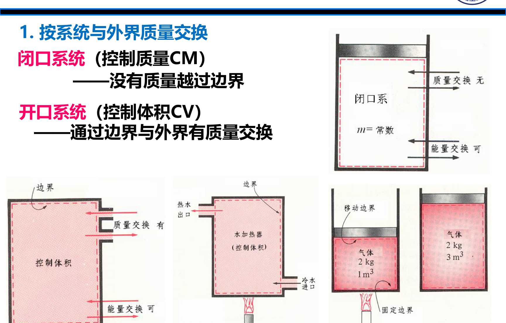
工质
热力学系统中实现能量转换的媒介物质称为工质。分析热机时，工质通常是气体或蒸汽；它在系统内流动并与外界交换热量和功。
热力学状态与平衡态¶
系统在某一时刻的宏观状况称为热力学状态。当系统不受外界干扰且内部各处宏观性质均匀一致时，系统处于平衡态。
平衡态的判据
平衡态要求系统同时满足：
- 力平衡：各部分压力相同
- 热平衡：各部分温度相同
- 相平衡（多相系）：各相化学势相同
只有处于平衡态，系统的宏观性质才能用确定的状态参数来描述。常用的状态参数有：温度 \(T\)、压力 \(p\)、比体积 \(v\) 等。
对于简单可压缩系统，两个独立的强度量参数即可完全确定系统状态，其余参数均可由状态方程导出。
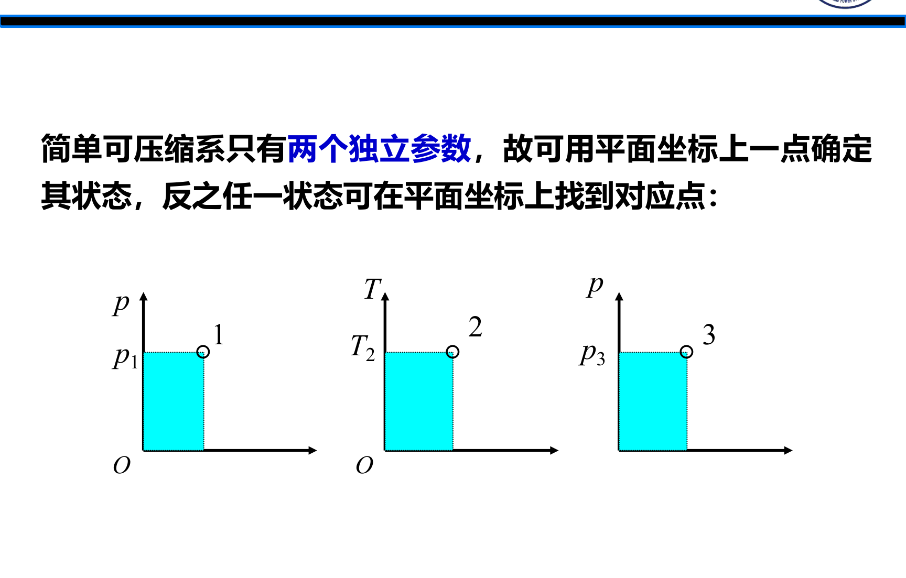
状态参数¶
压力¶
压力是单位面积上工质对边界的法向力，国际单位为 Pa（\(\text{N/m}^2\)）。
工程中常使用相对于环境大气压 \(p_b\) 的压力值：
其中 \(p_e\) 为表压，\(p_v\) 为真空度，两者均为非负值。热力学计算中必须使用绝对压力 \(p\)。
温度与温标¶
温度是描述系统冷热程度的状态参数，也是判断两系统是否达到热平衡的依据（热力学第零定律）。
经验温标与热力学温标
用两个固定点定义温标是常见做法：冰点（273.15 K）和沸点（373.15 K，标准大气压下）。若某经验温标 N 将冰点定为 \(T_1\)（N刻度）、沸点定为 \(T_2\)（N刻度），则任意温度在 N 温标与开氏温标之间满足线性关系：
符号辨析：常量与变量不要混淆
这个公式最容易误读的地方是：\(T_1\)、\(T_2\) 和 \(\{T_N\}^{\circ N}\)、\(\{T_N\}^K\) 看起来"都是温度"，但性质完全不同。
- \(T_1\)、\(T_2\)：固定常数，冰点和沸点在 N 温标上的规定读数（如摄氏度中 \(T_1 = 0\)，\(T_2 = 100\)）
- \(\{T_N\}^{\circ N}\)：变量，同一任意温度在 N 温标下的读数（即"N温标读数"）
- \(\{T_N\}^K\)：变量，同一任意温度在开氏温标下的读数（即"K温标读数"）
直白理解：等式左侧 = "N温标读数距冰点占多少格比例"，右侧 = "K温标读数距冰点占多少格比例"。两者相等，因为两种温标都对冰—沸点区间做等比线性划分，只是每格的绝对大小不同，但任意温度在区间内的相对位置相同。
摄氏度（\(^\circ\text{C}\)）是最常用的经验温标，取 \(T_1 = 0\)，\(T_2 = 100\) 代入上式化简即得：
热力学计算中统一使用热力学温标（开尔文，K）。
比体积与密度¶
比体积 \(v\) 为单位质量工质所占的体积：\(v = V/m\)（单位 \(\text{m}^3/\text{kg}\)）
密度 \(\rho = 1/v\)（单位 \(\text{kg/m}^3\)）
热力学过程¶
准静态过程¶
若过程进行得足够缓慢，系统在每个时刻都无限接近平衡态，则称该过程为准静态过程（或准平衡过程）。
准静态过程可以在热力学状态图（如 \(p\)-\(v\) 图、\(T\)-\(s\) 图）上用连续曲线表示，这是进行图形分析的基础。
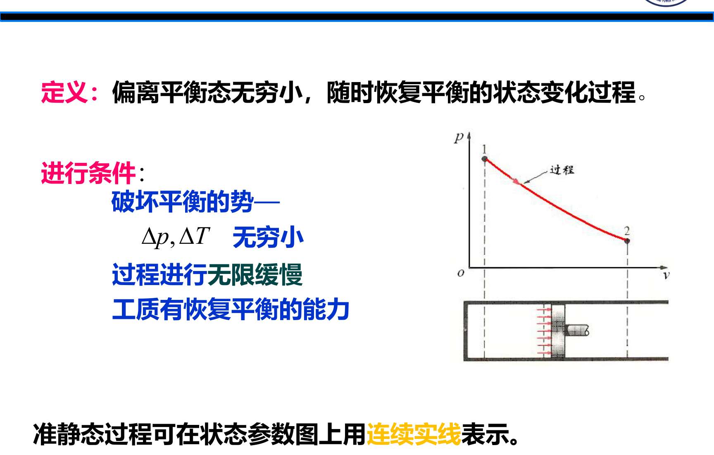
可逆过程¶
可逆过程是热力学中的理想化极限，需同时满足两个条件：
可逆过程的充要条件
- 准静态：过程无限缓慢进行
- 无耗散：不存在摩擦、粘性耗散等不可逆效应
实际过程均不可逆，可逆过程是评估热力学性能的理论上限。
循环¶
系统经历一系列过程后回到初始状态，称为热力学循环。循环在 \(p\)-\(v\) 图上为封闭曲线：
- 顺时针循环：系统对外净输出功（正循环，如热机）
- 逆时针循环：外界对系统净输入功（逆循环，如制冷机）
热量与功¶
热量和功是系统与外界相互作用时传递的能量，均为过程量（不是状态参数）。
热量¶
热量 \(Q\) 是由温差驱动的能量传递。规定系统吸热为正，放热为负。
对可逆过程，微元热量与熵 \(s\) 的关系为：
在 \(T\)-\(s\) 图上，可逆过程的热量等于曲线下的面积。
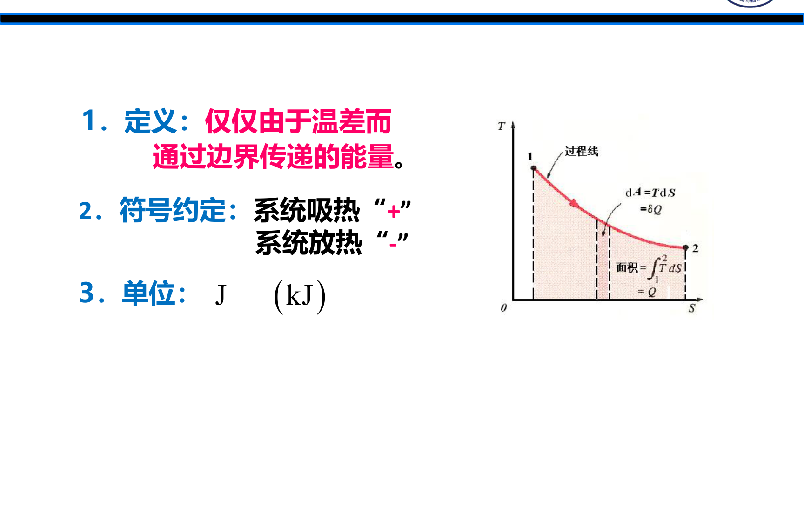
体积功（膨胀功）¶
闭口系工质因体积变化对外做的功：
在 \(p\)-\(v\) 图上，可逆过程的膨胀功等于曲线下的面积。
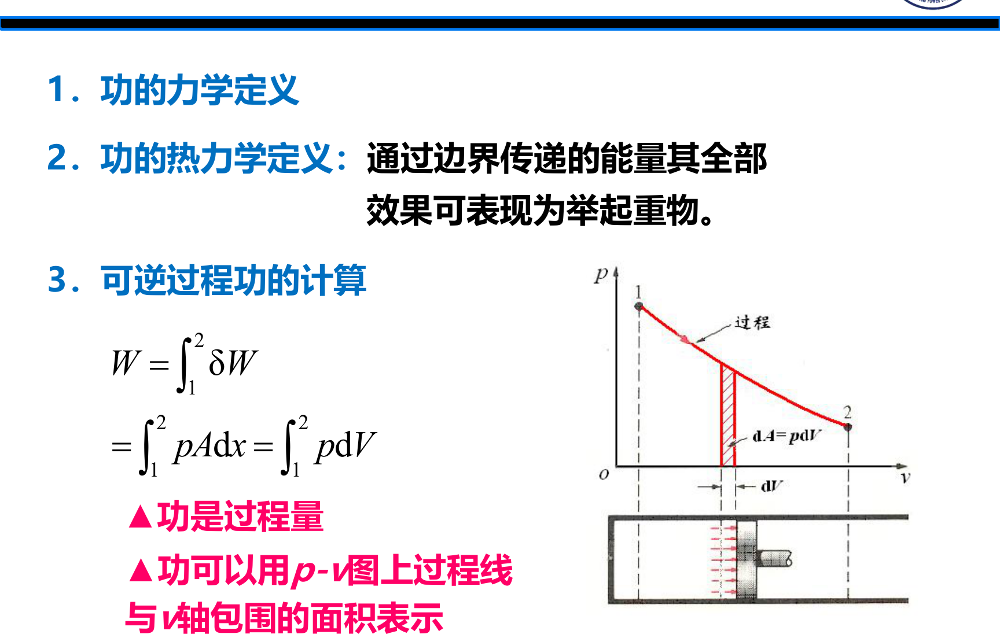
有用功¶
实际装置中，工质不仅推动活塞，还需克服大气背压 \(p_0\)，因此有用功（净输出功）为：
符号约定
本章起采用统一符号约定：大写字母（\(Q, W, U\)）为广延量（与质量成正比），小写字母（\(q, w, u\)）为比参数（单位质量对应值）。
真题精选¶
24-25春夏 · 热力系如何分类，各与外界如何交换能量与物质
题 根据热力系与外界能量交换的关系，可以把热力系分为哪几类？简述它们与外界的能量与物质交换情况。
答 按与外界交换情况可分为：
- 闭口系：不与外界交换物质，可交换热量和功；
- 开口系：与外界既可交换物质，也可交换能量；
- 绝热系：与外界无热量交换，但可有功和物质交换；
- 孤立系：与外界既无物质交换，也无任何形式能量交换。
24-25春夏 · 什么是开口系技术功，它与简单可压缩系中的容积功有何关系
题 什么是开口系技术功？在简单可压缩系统中它与容积功的关系。
答 技术功是轴功、动能和位能变化合并后的对外有效功。稳定流动能量方程
（\(C\) 表示宏观流速，避免与比热容 \(c\) 混淆）。简单可压缩准静态流动中
由 \(\mathrm{d}(pv)=p\,\mathrm{d}v+v\,\mathrm{d}p\) 知二者通过流动功 \(pv\) 相互关联：\(w_t = w - \Delta(pv)\)。
23-24春夏 · 表压是不是工质压力？表压不变工质压力是否变化
题 表压是不是工质压力？如果表压不变，工质压力是否会变化？
答 表压不是绝对压力，而是 \(p_g = p - p_b\)。工质压力应取绝对压力 \(p\)。若表压不变而当地大气压 \(p_b\) 变化，则工质绝对压力也随之变化。
20-21春夏 · 立方体各面温度不同，突然绝热后是否处于平衡态
题 立方体各个面温度不同，突然将该立方体绝热，其中气体是否处于热力学平衡状态？
答 不是。绝热只表示之后不与外界换热；内部仍存在温度梯度，会发生内部传热，故不是热力学平衡态。需经足够长时间内部温度均匀后，才达到平衡。
19春夏 · 技术功、膨胀功、流动功、净功的区别与联系
题 技术功、膨胀功、流动功、净功的区别和联系。
答
- 膨胀功 \(\delta w = p\,\mathrm{d}v\)：闭口系边界功；
- 流动功 \(pv\)：把工质推入或推出控制体所需的功；
- 技术功 \(\delta w_t = -v\,\mathrm{d}p\)：开口系可用于轴输出的功；
- 净功：循环或过程扣除输入功后的总输出。
稳定流动中常把流动功并入焓，技术功用于工程计算。
17春夏 · 摄氏温度与华氏温度的区别，二者可能相等吗
题 摄氏温度和华氏温度有什么区别？有没有可能相等？
答 摄氏温标与华氏温标零点和单位间隔不同：\(t_F = \tfrac{9}{5}t_C + 32\)。令 \(t_F = t_C\) 得 \(t_C = t_F = -40^\circ\)，二者可能相等。
第二章 · 能量与热力学第一定律¶
章节概览
热力学第一定律是能量守恒在热力学中的具体形式。本章从闭口系出发，逐步推广到开口系和稳定流动系统，建立各类系统的能量方程。
流动功与推进功¶
当工质在开口系（如管道、涡轮）中流动时，上游工质必须克服截面处的压力将下游工质"推入"系统，这部分功称为流动功（或推进功）。
对于截面处压力为 \(p\)、比体积为 \(v\) 的工质，单位质量的流动功为：
当工质从状态 1 流入、状态 2 流出时，流动功的净变化量为：
这一项将频繁出现在开口系的能量方程中。
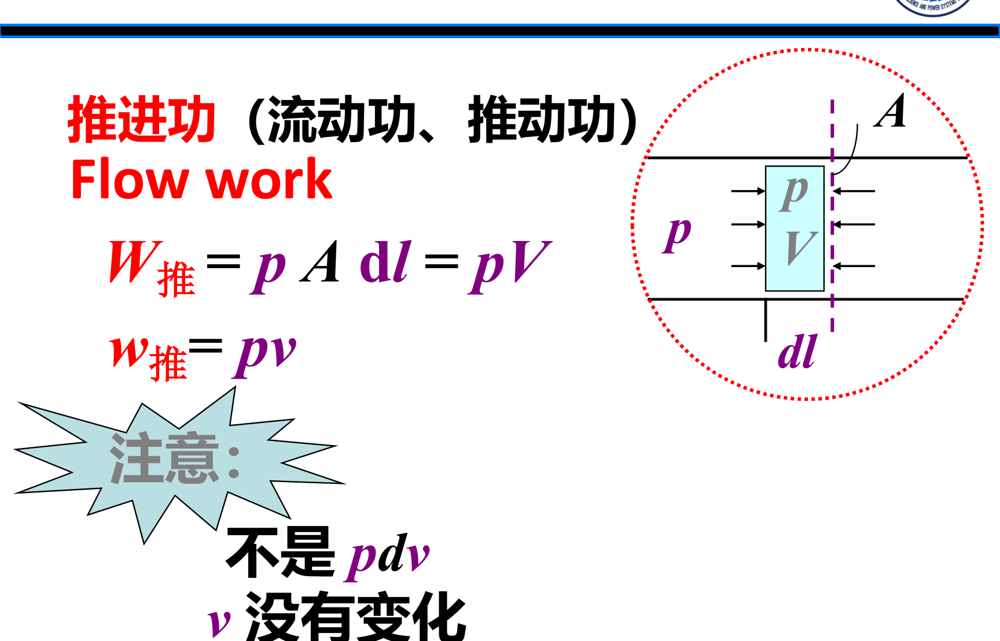
焓¶
为了简化开口系的书写，引入焓 \(H\) 作为复合状态参数：
焓的物理意义
焓 \(h\) 代表工质携带的总储运能量——既包括内能 \(u\)，也包括将其推入流场所需的流动功 \(pv\)。因此，在稳定流动问题中，焓是描述工质能量状态的最自然的参数。
焓是状态参数（广延量），单位为 J（或 J/kg）。
热力学第一定律——闭口系¶
对于质量固定的闭口系，能量守恒表述为：
对可逆过程，\(\delta W = p \, \mathrm{d}V\)，因此：
对有限过程（从状态 1 到状态 2）：
循环过程回到初态，\(\Delta U = 0\)，故：
即循环净热量等于循环净功——这是热机效率分析的基础。
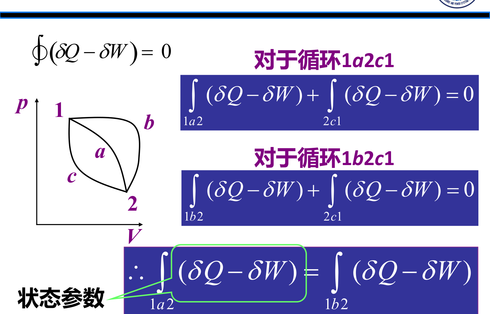
开口系能量方程¶
对于允许工质进出的开口系（控制体），除了热量和功的交换，还需计入工质携带的能量。
设控制体在微元时间内：
- 从入口 1 接收质量 \(\delta m_1\)，比焓 \(h_1\)，流速 \(c_1\)，高度 \(z_1\)
- 从出口 2 排出质量 \(\delta m_2\)，比焓 \(h_2\)，流速 \(c_2\)，高度 \(z_2\)
- 与外界交换热量 \(\delta Q\)，输出轴功 \(\delta W_i\)（内部功，不含流动功）
开口系能量方程（通用形式）：
其中 \(E_{\text{cv}}\) 为控制体内的总储存能（内能 + 动能 + 势能）。
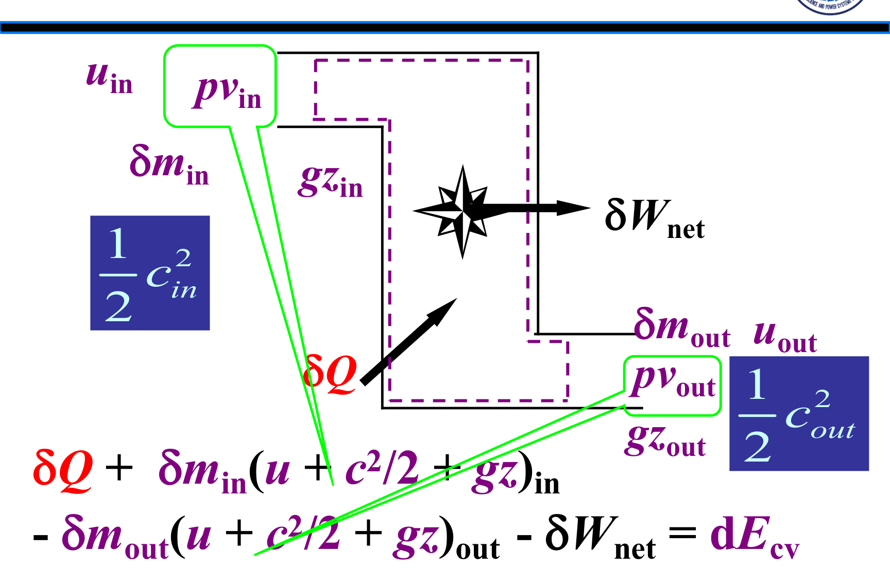
稳定流动能量方程¶
工程中最常见的是稳定流动（稳态）：控制体内工质状态不随时间变化，进出质量流量相等（\(\dot{m}_1 = \dot{m}_2 = \dot{m}\)），此时 \(\mathrm{d}E_{\text{cv}} = 0\)。
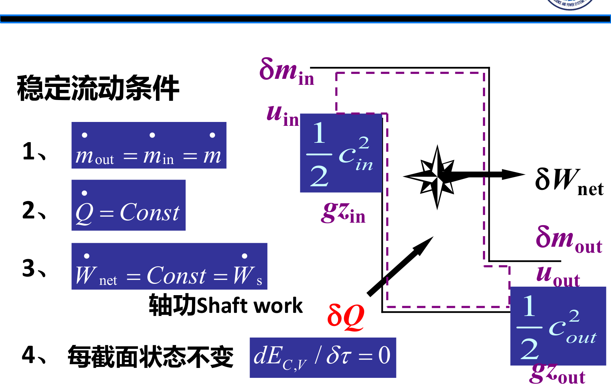
单位质量工质的稳定流动能量方程（SFEE）：
工程应用的简化
动能差 \(\Delta c^2/2\) 和位能差 \(g\Delta z\) 在多数工程设备中远小于焓差，可忽略，方程简化为：
对绝热稳定流动（\(q = 0\)），轴功完全来自焓降：\(w_i = h_1 - h_2\)
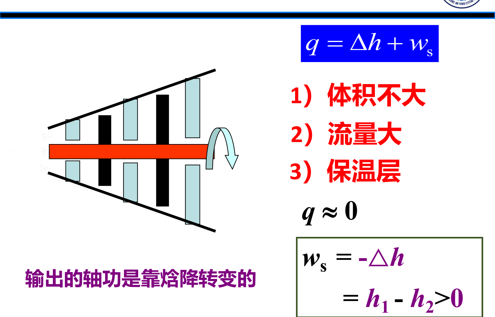
技术功¶
在稳定流动中，技术功 \(w_t\) 定义为除流动功以外的所有功之和（含轴功、摩擦功等）：
对可逆稳定流动，技术功与压力的关系为：
在 \(p\)-\(v\) 图上，\(-\int v \, \mathrm{d}p\) 对应曲线左侧的面积（与 \(\int p \, \mathrm{d}v\) 在曲线下方对应）。
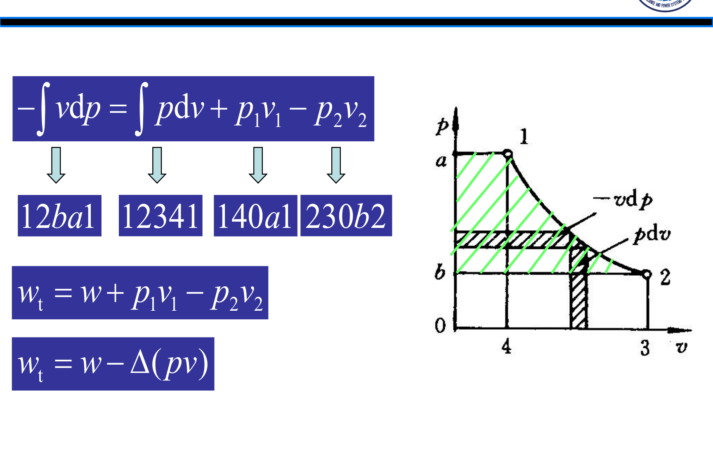
相应地，可逆稳定流动中热量与焓、熵的关系：
闭口系与开口系功的对比
- 闭口系：\(\delta w = p \, \mathrm{d}v\)（\(p\)-\(v\) 图曲线下面积）
- 开口系（稳流）：\(\delta w_t = -v \, \mathrm{d}p\)（\(p\)-\(v\) 图曲线左侧面积）
两者相差一个 \(\mathrm{d}(pv)\) 项，正是流动功的贡献。
真题精选¶
22-23春夏 · 节流阀工作原理，空气能否用节流阀节流
题 请简述节流阀工作原理。空气能用节流阀节流吗？
答 节流阀使流体通过局部阻力产生压降，通常可视为绝热、无轴功、动位能变化可忽略的稳定流动，因此
空气可以节流，但若按理想气体处理 \(h = h(T)\)，节流前后温度近似不变；真实空气温度变化由焦耳–汤姆逊系数决定。
23-24春夏 · 流动功表达式，解释流动功
题 写出流动功表达式，并解释流动功。
答 流动功为单位质量工质被推入或推出控制体所需的功：
它不是轴功，而是维持流动所必需的推动功，常与内能合成焓 \(h = u + pv\)。
19-20春夏 · 绝热刚性容器内电机搅拌（计算）
题 一个绝热刚性容器，电机在容器内搅拌，给出初始压力 \(p_1\)、初温 \(t_1\)、终压 \(p_2\)。求终温 \(t_2\)、做的功、容器内气体的换热量、热力学能和焓的变化量、吸热量等。
解 绝热刚性容器为闭口系，\(Q = 0\)，\(V = \text{const}\)，气体质量不变。若气体可按理想气体处理，
边界功 \(W_b = 0\)。若电机对气体输入搅拌功 \(W_\text{in}\)，第一定律给
其中 \(\Delta H\) 只是焓作为状态参数的变化量；刚性容器分析能量平衡时主要使用 \(\Delta U\)。以系统对外作功为正时 \(W = -W_\text{in}\)，吸热量 \(Q = 0\)。
第三章 · 熵与热力学第二定律¶
章节概览
热力学第一定律告诉我们能量守恒，但没有说明过程的方向。第二定律引入了过程方向性的判据——熵，揭示了自然过程不可逆的本质。
热力学第二定律¶
第二定律有多种等价表述，最常见的两种：
第二定律的两种经典表述
开尔文-普朗克表述：不可能建造一种循环工作的热机，它从单一热源吸热并将其全部转化为功，而不留下任何其他变化。
克劳修斯表述：热量不可能自发地从低温物体传向高温物体，而不引起其他变化。
这两种表述完全等价——违反其一必然违反其二。
第二定律的本质是：自然过程具有方向性，一切实际过程均不可逆。
卡诺循环与热效率¶
卡诺循环是在高温热源 \(T_1\) 和低温热源 \(T_2\)（\(T_1 > T_2\)）之间工作的可逆循环，由两个等温过程和两个绝热过程组成。
卡诺循环的热效率：
卡诺定理
在相同温度范围内工作的所有热机中：
- 可逆热机的效率最高
- 一切可逆热机的效率相同，且仅取决于两热源的温度 \(T_1\) 和 \(T_2\)
- 不可逆热机的效率低于 \(\eta_C\)
即：\(\eta_{\text{irrev}} < \eta_C = 1 - \dfrac{T_2}{T_1}\)
制冷循环与热泵¶
逆向运行卡诺循环即为卡诺制冷循环，从低温热源 \(T_2\) 吸热 \(q_2\)，向高温热源 \(T_1\) 放热 \(q_1\)，消耗净功 \(w\)。
制冷系数（COP）：
热泵供热系数：
克劳修斯不等式¶
对任意热力学循环，将每个微元过程的热量 \(\delta Q\) 除以该过程对应的热源温度 \(T\)，沿整个循环积分，有：
等号对应可逆循环，不等号对应不可逆循环。这一关系称为克劳修斯不等式，是第二定律的数学表达。
熵的定义¶
由克劳修斯不等式可以证明，对于可逆过程，\(\dfrac{\delta Q}{T}\) 是一个全微分，对应一个状态函数。将这个状态函数称为熵 \(S\)：
熵的定义
对可逆过程，系统熵变等于传热量除以热源热力学温度：
熵是状态参数（广延量），单位 J/K（比熵 \(s\) 的单位 J/(kg·K)）。
对有限可逆过程：
在 \(T\)-\(s\) 图上，可逆过程的热量等于曲线下的面积。
不可逆过程与熵产¶
对于实际（不可逆）过程，克劳修斯不等式给出：
引入熵产 \(\delta S_g\) 来量化不可逆程度：
其中： - \(\dfrac{\delta Q}{T}\)：由热量传递引起的熵流（可正可负） - \(\delta S_g \geq 0\)：由不可逆因素（摩擦、温差传热等）产生的熵产
熵产的性质
熵产永远非负，且不可逆程度越高，熵产越大。熵产是衡量过程不可逆性的量度。
孤立系熵增原理¶
对于与外界无热量交换（绝热）且无物质交换的孤立系统，\(\delta Q = 0\)，故：
熵增原理
孤立系统的熵只能增大或保持不变，不能减小：
等号对应可逆过程（熵不变），不等号对应不可逆过程（熵增大）。这就是孤立系熵增原理，是判断过程方向性的最终判据。
熵方程¶
闭口系熵方程¶
对闭口系微元过程：
其中 \(T_b\) 为边界温度，\(\delta S_g \geq 0\)。
展开为对有限过程：
开口系熵方程¶
稳定流动开口系，单位时间的熵平衡：
对单位质量工质：
用熵判断方向
- 某过程若导致孤立系熵减，则该过程不可能发生
- 若导致熵增，则该过程可以自发进行
- 若熵不变，则该过程可逆
能量的品位与㶲（有效能）¶
第一定律只讲能量在数量上守恒，却没回答一个工程上更关键的问题：同样多的能量，做功本领是否相同？ 答案是否定的——能量有品位（品质）之分。
能量按可转换性分为三类
| 品位 | 类型 | 例子 |
|---|---|---|
| 无限可转换能 | 可全部转化为功 | 机械能、电能 |
| 部分可转换能 | 只能部分转化为功 | 热能（受第二定律限制） |
| 不可转换能 | 完全不能转化为功 | 环境介质的热力学能 |
㶲（exergy）与火无（anergy）
在给定环境（\(T_0, p_0\)）下，能量中理论上可转化为有用功的最大部分称为㶲（有效能 \(E_x\)）；其余无法转化为功的部分称为火无（anergy，无效能 \(A_n\)）。两者之和为能量本身： $\(\text{能量} = E_x + A_n\)$ 环境是㶲的基准，环境的㶲为零。㶲把"能量的量"与"能量的质"统一了起来。
热量㶲¶
从温度 \(T\,(>T_0)\) 的热源取热 \(Q\)，其中可转化为功的部分（热量㶲）由卡诺因子给出：
定温热源时 \(E_{x,Q} = Q\left(1 - \dfrac{T_0}{T}\right)\)，其余 \(A_{n,Q} = Q\dfrac{T_0}{T} = T_0\Delta S\) 为无效能。可见热源温度越高，热量的㶲越多——这正是"能质"的体现。
闭口系㶲与稳流㶲¶
工质相对环境所具有的做功能力：
（忽略动能、位能；下标 0 表示工质与环境平衡时的状态。）
㶲损与㶲平衡¶
Gouy–Stodola 定理：㶲损 = 熵产 × 环境温度
一切不可逆过程都会损失做功能力，称为㶲损 \(I\)。它与熵产 \(S_g\) 直接成正比： $\(I = T_0\, S_g \geq 0\)$ 可逆过程 \(S_g = 0\) 故 \(I = 0\)。㶲损只取决于熵产——而熵是状态量、易计算，功是过程量、难计算，所以求㶲损通常先求 \(S_g\) 再乘 \(T_0\)，比直接做㶲平衡更简便。
㶲平衡方程：
㶲效率¶
它衡量用能在质上的完善程度，区别于只看"量"的热效率。
为什么要做㶲分析
据课程数据，2020 年中国能源系统总（能量）效率约 39%，而㶲效率仅约 24%。能量效率达标不代表用能合理——㶲分析能指出"用高品位能（电、燃料）去做低品位的事（如电阻丝供暖）"这类品位浪费，是能源系统节能与转型的关键视角。
例题 3-2：定容升温的㶲分析（直接加热 vs 热泵）
题目：刚性容器内 \(1\,\text{kg}\) 空气定容地从 \(300\,\text{K}\) 升至 \(400\,\text{K}\)，环境 \(T_0 = 300\,\text{K}\)、\(p_0 = 100\,\text{kPa}\)，取 \(c_v = 0.717\,\text{kJ/(kg·K)}\)。求：(1) 用 \(500\,\text{K}\) 热源直接加热时的㶲损；(2) 改用可逆热泵实现相同状态变化，外界需输入的最小可用能。
求解：
定容无功，需要的热量 \(Q = c_v\Delta T = 0.717 \times 100 = 71.7\,\text{kJ}\)。
空气的㶲增量（定容，\(\Delta V=0\)）：
(1) 直接加热——熵产 = 空气熵增 + 热源熵减：
(2) 可逆热泵：过程可逆，\(S_g = 0\) 故无㶲损，外界输入的最小可用能恰等于空气的㶲增量：
要点：直接用高温热源加热，虽然能量"够用"，却白白损失了 \(18.9\,\text{kJ}\) 的做功能力；改用热泵从环境"搬运"低品位热，只需 \(9.82\,\text{kJ}\) 功——㶲视角下热泵能效远高于电阻加热。
真题精选¶
24-25春夏 · 第二定律的两个数学表达式并解释
题 给出两个关于热力学第二定律的数学表达式，并解释。
答
前者为克劳修斯不等式，等号对应可逆循环；后者为孤立系熵增原理，等号对应可逆过程，不等号对应不可逆过程。
24-25春夏 · 什么是可逆过程，用孤立熵增原理解释温差传热不可逆
题 什么是可逆过程？用孤立熵增原理解释为什么温差传热不可逆。
答 可逆过程是系统和外界均可无痕恢复原状的理想过程，要求准静态且无摩擦、有限温差传热、节流、混合等不可逆因素。温差传热中
熵增大于零，因而不可逆。
22-23春夏 · 能否从1200K取热做功1200kJ并放800kJ到300K（计算）
题 能否实现从 1200 K 热源取热、做功 1200 kJ 并且放出 800 kJ 热量到 300 K 冷源？
解 能量守恒要求 \(Q_H = W + Q_L = 1200 + 800 = 2000\ \text{kJ}\)。孤立熵变
可实现；其效率 \(60\%\) 小于卡诺效率 \(1 - 300/1200 = 75\%\)。（17春夏有同型题：3000 K 吸热、做功 1800 J、放 1000 J 到 300 K，\(\Delta S = -2800/3000 + 1000/300 = 2.40\ \text{J/K} > 0\)，同样可行。）
22-23春夏 · 封闭房间能否用冰箱制冷
题 封闭房间能否用冰箱制冷，并回答原因。
答 不能用普通冰箱给封闭房间长期制冷。冰箱从箱内取热 \(Q_L\)，向房间放热 \(Q_H = Q_L + W\)；若冰箱整体在房内，房间净增热量为输入电功 \(W\)，房间温度反而升高。
20-21春夏 · 熵增原理及其应用，如何求有效能损失
题 简述熵增原理及其应用，以及如何求有效能的损失。
答 熵增原理：孤立系统熵不减，\(\Delta S_\text{iso} = S_\text{gen} \ge 0\)，可用于判断过程方向、可逆性和极限性能。有效能损失由古伊–斯托多拉定理给出：
20-21春夏 · 关门开冰箱，为何先凉后热
题 关闭门窗，打开冰箱，开始时室内会感到凉快，过一段时间效果变差甚至变热，为什么？
答 刚打开冰箱门时，局部冷空气逸出可能让人短暂感到凉；随后压缩机耗电转化为热，并把箱内热量也排入房间，故房间总能量增加，最终变热。
24-25春夏 · 向外排烟气的熵变与有效能减少（计算）
题 向外排烟气，烟气的体积流量已知，烟气温度 \(t\)、环境温度 \(t_0\)、平均定压比热容 \(C_p\)、烟气密度 \(\rho\) 已知。求：(1) 烟气每小时的熵变；(2) 环境每小时的熵变；(3) 每小时有效能的减少。
解 设体积流量 \(\dot V\)，质量流量 \(\dot m = \rho\dot V\)，温度取热力学温度 \(T,T_0\)。每小时烟气从 \(T\) 冷却至 \(T_0\) 的熵变
环境吸热 \(Q_0 = 3600\,\dot m C_p(T - T_0)\)，故
因 \(T > T_0\)，有 \(\Delta S_g < 0\)、\(\Delta S_0 > 0\)；括号内即烟气与环境组成孤立系的总熵产。
19-20春夏 · 列举生活中的不可逆热力过程及不可逆因素
题 列举生活中的不可逆热力过程，有哪些引起其不可逆的因素？
答 生活中的不可逆过程有摩擦生热、有限温差传热、气体自由膨胀、节流、不同气体混合、燃烧等。不可逆因素包括摩擦、有限温差、有限压差、浓度差、化学反应和电阻等。
17春夏 · 有/无不可逆因素与吸放热组合下系统熵如何变化
题 对一个体系：(1) 无不可逆因素，\(Q>0\)；(2) 无不可逆因素，\(Q<0\)；(3) 无不可逆因素，\(Q=0\)；(4) 有不可逆因素，\(Q>0\)；(5) 有不可逆因素，\(Q=0\)。判断各情况系统的熵变情况。
答 用 \(\Delta S = \int \delta Q/T_b + S_\text{gen}\) 判断：无不可逆因素时 \(S_\text{gen}=0\)，故 \(Q>0\) 则 \(\Delta S>0\)，\(Q<0\) 则 \(\Delta S<0\)，\(Q=0\) 则 \(\Delta S=0\)；有不可逆因素时 \(S_\text{gen}>0\)，若 \(Q>0\) 则 \(\Delta S>0\)，若 \(Q=0\) 则 \(\Delta S = S_\text{gen} > 0\)。
模拟题 · “不可逆过程就是不可能自动进行的过程”对吗
题 有人认为：“不可逆过程就是不可能自动进行的过程”，你认为这种说法正确吗？为什么？
答 不正确。许多不可逆过程会自动进行，如热量自高温传向低温、气体自由膨胀；不可逆是指系统和外界不能同时恢复原状，并非不能自动发生。
模拟题 · 已知循环熵产求热机效率与吸热量
题 有一台热机循环，从 \(T_H = 800\ \text{K}\) 热源吸热 \(Q_1\)，对外做功 \(W\)，向 \(T_L = 300\ \text{K}\) 冷源放热 \(Q_2\)。已知循环熵产为 \(0.5\ \text{J/K}\)，求效率和吸热量。
解 对热机循环，熵产
仅给熵产而未给 \(W\) 或 \(Q_1\)，不能唯一确定效率和吸热量。若补充 \(W\)，则
可逆卡诺循环是 \(S_\text{gen} = 0\) 的特例。
第四章 · 热力学一般关系¶
章节概览
本章从热力学基本微分方程出发，推导各状态参数之间的普遍关系。这些关系适用于任何纯物质，是建立具体物质热力学性质模型的理论基础。
比热容¶
比热容描述物质升温所需热量的能力，但因过程不同而有不同定义。
定容比热容 c_v¶
在体积不变（\(\mathrm{d}v = 0\)）的条件下加热，所有热量全部用于升高内能：
定压比热容 c_p¶
在压力不变（\(\mathrm{d}p = 0\)）的条件下加热，热量用于升高内能并对外做膨胀功：
由于定压过程额外包含了膨胀功，因此对同一物质 \(c_p > c_v\)（后续推导将给出精确关系）。
热力学基本微分关系¶
联合热力学第一定律和第二定律（可逆过程 \(\delta q = T \, \mathrm{d}s\), \(\delta w = p \, \mathrm{d}v\)），得到：
对焓 \(h = u + pv\) 取全微分：
引入亥姆霍兹函数 \(f = u - Ts\)：
引入吉布斯函数 \(g = h - Ts\)：
四个基本热力学函数
| 函数 | 定义 | 基本微分式 | 自然变量 |
|---|---|---|---|
| 内能 \(u\) | — | \(\mathrm{d}u = T\mathrm{d}s - p\mathrm{d}v\) | \(s, v\) |
| 焓 \(h\) | \(u+pv\) | \(\mathrm{d}h = T\mathrm{d}s + v\mathrm{d}p\) | \(s, p\) |
| 亥姆霍兹函数 \(f\) | \(u-Ts\) | \(\mathrm{d}f = -s\mathrm{d}T - p\mathrm{d}v\) | \(T, v\) |
| 吉布斯函数 \(g\) | \(h-Ts\) | \(\mathrm{d}g = -s\mathrm{d}T + v\mathrm{d}p\) | \(T, p\) |
Maxwell 关系¶
由于 \(u, h, f, g\) 均为状态参数（全微分），利用混合偏导数相等（\(\partial^2/\partial x\partial y = \partial^2/\partial y\partial x\)），可从四个基本关系式各导出一个 Maxwell 关系：
Maxwell 关系的用途
熵 \(s\) 不能直接测量，Maxwell 关系将含 \(s\) 的偏导数转换为可测的 \(p, v, T\) 偏导数，是推导热力学性质关系式的核心工具。
热系数¶
以下三个热系数可由 \(p, v, T\) 实验直接测定，是描述物质宏观热力学行为的重要参数。
体膨胀系数 α_v¶
恒压下，温度升高 1 K 时比体积的相对变化量：
等温压缩率 κ_T¶
恒温下，压力增加时比体积的相对缩小量（加负号使其为正值）：
焦汤系数 μ_J¶
节流过程（\(h = \text{const}\)）中，压降引起的温度变化：
\(\mu_J > 0\)：节流后温度降低（大多数气体在常温下）；\(\mu_J < 0\)：节流后温度升高。
三个热系数之间满足循环关系：
比热差关系¶
利用 Maxwell 关系和热系数，可以推导出 \(c_p\) 与 \(c_v\) 的普遍差值：
比热差的重要推论
- 由于 \(T > 0\)，\(v > 0\)，\(\kappa_T > 0\)，故 \(c_p - c_v \geq 0\)，即 \(c_p\) 恒大于等于 \(c_v\)
- 等号成立当且仅当 \(\alpha_v = 0\)（如 4°C 的水，密度最大处）
- 对理想气体，\(c_p - c_v = R_g\)（第五章导出）
热力学能、焓、熵的全微分表达式¶
把 \(u\)、\(h\)、\(s\) 取作可测量自变量 \((T, v)\) 或 \((T, p)\) 的函数，利用基本微分关系与 Maxwell 关系代入，可把它们的变化量化为只含 \(c_v\)、\(c_p\) 和 \(p\)-\(v\)-\(T\) 关系的可计算形式。这是制作物性表、计算实际气体（非理想气体）状态变化量的基础。
热力学能 \(u(T, v)\)：
末行用了 Maxwell 关系 \(\left(\dfrac{\partial s}{\partial v}\right)_T = \left(\dfrac{\partial p}{\partial T}\right)_v\)。
焓 \(h(T, p)\)：
末行用了 Maxwell 关系 \(\left(\dfrac{\partial s}{\partial p}\right)_T = -\left(\dfrac{\partial v}{\partial T}\right)_p\)。
熵 \(s(T, v)\) 与 \(s(T, p)\)：
其中用到 \(\left(\dfrac{\partial s}{\partial T}\right)_v = \dfrac{c_v}{T}\)、\(\left(\dfrac{\partial s}{\partial T}\right)_p = \dfrac{c_p}{T}\)。
这组式子为什么重要
它们把无法直接测量的 \(u\)、\(h\)、\(s\) 变化，转化为只含可测量的比热容 \(c_v\)、\(c_p\) 和 \(p\)-\(v\)-\(T\) 数据的积分，是一切实际工质状态变化量计算的出发点：
- 对理想气体，\(\left(\dfrac{\partial p}{\partial T}\right)_v = \dfrac{R_g}{v}\)、\(\left(\dfrac{\partial v}{\partial T}\right)_p = \dfrac{R_g}{p}\)，代入即退化为第五章的 \(\mathrm{d}u = c_v\mathrm{d}T\)、\(\mathrm{d}h = c_p\mathrm{d}T\) 等；
- 对实际气体，则代入具体状态方程或实测 \(p\)-\(v\)-\(T\) 数据积分。
真题精选¶
24-25春夏 · 基本热力学关系是否适用于不可逆过程
题 基本热力学关系是否适用于不可逆过程，为什么？
答 基本热力学关系式如 \(\mathrm{d}u = T\mathrm{d}s - p\mathrm{d}v\)、\(\mathrm{d}h = T\mathrm{d}s + v\mathrm{d}p\) 是状态参数之间的关系，只要求初、终态为平衡态，因此也可用于不可逆过程两端平衡态之间的性质变化；但式中的 \(T\mathrm{d}s\)、\(p\mathrm{d}v\) 不再是不可逆过程的实际热量和功。
24-25春夏 · 什么是焦耳–汤姆逊效应，μ>0时节流降压温度如何变化
题 什么是焦耳–汤姆逊效应？若焦耳–汤姆逊系数大于 0，节流后压力降低时，节流后流体的温度如何变化，为什么？（绝热节流系数又称焦耳–汤姆逊系数，符号常用 \(\mu_{JT}\) 或 \(\alpha_h\)。）
答 焦耳–汤姆逊效应是流体绝热节流后温度随压力变化的现象，系数
若 \(\mu_{JT} > 0\)，节流压降 \(\mathrm{d}p < 0\)，则 \(\mathrm{d}T = \mu_{JT}\,\mathrm{d}p < 0\)，温度降低。
19春夏 · 为什么湿蒸汽绝热节流总呈降温特性
题 为什么湿蒸汽绝热节流总是呈现降温特性？
答 湿蒸汽节流近似 \(h = \text{const}\)。在两相区 \(h = h_f + x h_{fg}\)，压力降低时饱和温度降低；节流后状态仍由新的饱和温度控制，故表现为降温。干度变化需由节流前后等焓线与饱和性质共同判断，通常会增加。
模拟题 · 绝热节流过程中理想气体温度如何变化
题 绝热节流过程中，理想气体的温度如何变化？为什么？
答 理想气体 \(h = h(T)\)。绝热节流 \(h_1 = h_2\)，所以 \(T_1 = T_2\)，温度不变，\(\mu_{JT} = 0\)。
第五章 · 气体的热力性质¶
章节概览
本章将第四章的普遍关系应用于理想气体，推导其状态方程和各热力学量的计算公式。理想气体是工程热力学计算的最重要模型。
理想气体模型¶
理想气体是气体在低压高温极限下的简化模型：分子体积可忽略不计，分子间无相互作用力（无势能）。
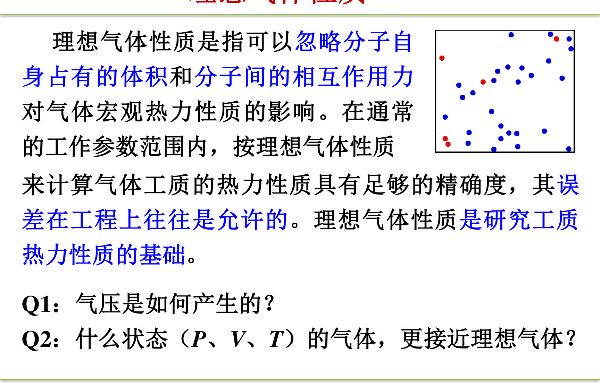
理想气体的状态方程（克拉贝龙方程）：
或用比参数写成：
符号说明
| 符号 | 含义 | 单位 |
|---|---|---|
| \(p\) | 绝对压力 | Pa |
| \(V\) | 体积 / \(v\) 为比体积 | m³ / m³/kg |
| \(n\) | 物质的量 | mol |
| \(m\) | 质量 | kg |
| \(R = 8.314\) | 通用气体常数 | J/(mol·K) |
| \(R_g = R/M\) | 气体常数（特定气体） | J/(kg·K) |
| \(T\) | 热力学温度 | K |
| \(M\) | 摩尔质量 | kg/mol |
理想气体的热系数¶
将状态方程 \(pv = R_g T\) 代入第四章的热系数定义，可得理想气体的热系数取特殊值：
焦汤系数为零的含义
\(\mu_J = 0\) 意味着理想气体节流后温度不变——这是理想气体"分子间无相互作用"假设的直接推论。实际气体节流时温度会变化（正或负）。
比热容关系¶
摩尔热容与质量热容¶
| 量 | 关系 |
|---|---|
| 摩尔热容 \(C_{p,m}\) | \(C_{p,m} = Mc_p\) |
| 摩尔热容 \(C_{v,m}\) | \(C_{v,m} = Mc_v\) |
| 摩尔热容差 | \(C_{p,m} - C_{v,m} = R\) |
| 质量热容差 | \(c_p - c_v = R_g\) |
第四章比热差公式 \(c_p - c_v = Tv\alpha_v^2/\kappa_T\) 代入理想气体热系数即可验证上式：
热容比（绝热指数）：
对单原子气体 \(\gamma = 5/3\)，双原子气体 \(\gamma \approx 7/5\)，多原子气体 \(\gamma\) 更小。
热力学函数微分式¶
由于理想气体 \(u\) 和 \(h\) 只是温度的函数（\(\mu_J = 0 \Rightarrow u = u(T)\)，\(h = u + pv = u(T) + R_g T = h(T)\)）：
熵微分（代入 \((\partial p/\partial T)_v = R_g/v\) 和 \((\partial v/\partial T)_p = R_g/p\)）：
状态变化量的计算¶
对于从状态 1 到状态 2 的过程，设比热容为常数（定值比热容假设）：
也可利用状态方程变换
利用 \(pv = R_g T\) 可在三个熵差表达式之间相互转换，选择已知量最方便的形式计算即可。
平均比热容¶
实际气体比热容随温度变化，工程中常采用平均比热容处理变温区间：
其中 \(\overline{c}_v \big|_0^{t}\) 为从 0°C 到 \(t\)°C 的平均比热容，可查热力学数据表。
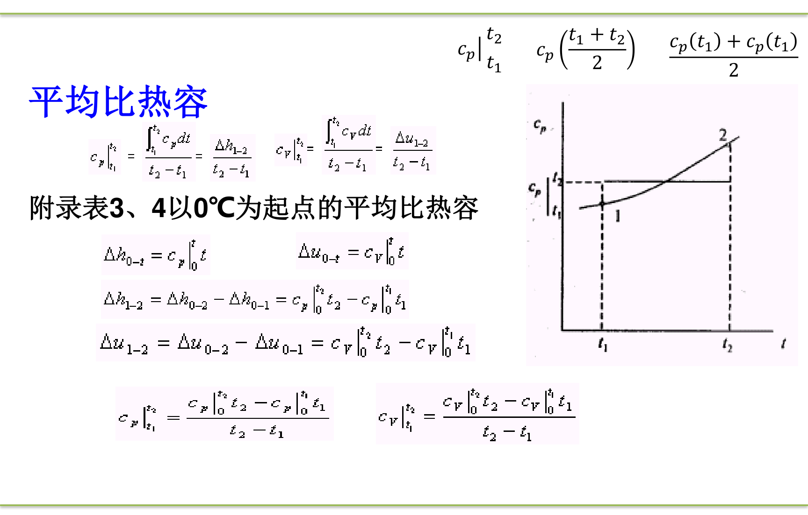
查表方法
- 分别查出以 0°C 为参考态的 \(\overline{c}\big|_0^{t_1}\) 和 \(\overline{c}\big|_0^{t_2}\)
- 用上式合成区间 \([t_1, t_2]\) 的平均比热容
- 代入 \(\Delta h = \overline{c}_p \cdot (t_2 - t_1)\) 等计算
理想气体过程汇总¶
对理想气体（定值比热），不同典型过程的计算规律：
| 过程 | 约束 | \(w\) | \(q\) | \(\Delta s\) |
|---|---|---|---|---|
| 等温 | \(T=\text{const}\) | \(R_g T\ln(v_2/v_1)\) | \(=w\) | \(R_g\ln(v_2/v_1)\) |
| 等容 | \(v=\text{const}\) | \(0\) | \(c_v\Delta T\) | \(c_v\ln(T_2/T_1)\) |
| 等压 | \(p=\text{const}\) | \(p\Delta v=R_g\Delta T\) | \(c_p\Delta T\) | \(c_p\ln(T_2/T_1)\) |
| 绝热可逆 | \(s=\text{const}\) | \(-\Delta u\) | \(0\) | \(0\) |
绝热可逆过程满足 \(pv^\gamma = \text{const}\)（详见第八章）。
实际气体状态方程与压缩因子¶
理想气体模型只在低压、高温下成立。实际气体分子本身有体积、分子间有作用力，需要修正的状态方程来描述。最经典的是范德瓦尔斯方程（van der Waals）：
其中 \(a/v^2\) 修正分子间引力（使压力偏小），\(b\) 修正分子自身占据的体积。常数 \(a\)、\(b\) 可由临界点的数学特征确定——临界等温线在临界点处为拐点，即 \(\left(\dfrac{\partial p}{\partial v}\right)_T = \left(\dfrac{\partial^2 p}{\partial v^2}\right)_T = 0\)。
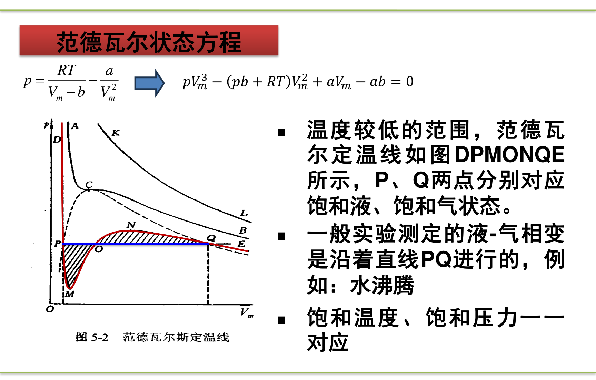
工程上更常用压缩因子 \(Z\) 衡量实际气体偏离理想气体的程度：
理想气体 \(Z \equiv 1\)；\(Z\) 偏离 1 的大小反映非理想性。对比态定律指出：用对比参数 \(p_r = p/p_c\)、\(T_r = T/T_c\) 表示时，各种气体的 \(Z\) 近似只是 \(p_r\)、\(T_r\) 的通用函数，可查通用压缩因子图统一估算。
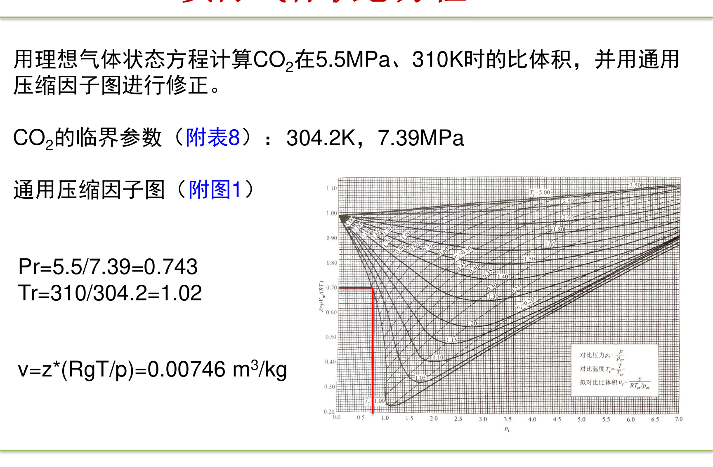
真题精选¶
24-25春夏 · 压缩因子的定义，为何低压高温时趋近1
题 压缩因子的定义，为什么低压高温时压缩因子趋近于 1？
答 压缩因子
低压高温时分子间距离大、相互作用弱，真实气体趋近理想气体，故 \(Z \to 1\)。
模拟题 · 理想气体比热容定义，定压与定容比热容关系
题 简述理想气体比热容的定义，以及定压比热容与定容比热容的关系。
答 理想气体比热容为单位质量气体升高单位温度所需热量：\(c_v = (\partial u/\partial T)_v\)，\(c_p = (\partial h/\partial T)_p\)。理想气体满足迈耶公式
第六章 · 蒸汽的热力性质¶
章节概览
工程上最常用的工质——水蒸气，在相变区附近严重偏离理想气体，必须借助实验数据（图表）而非状态方程来确定性质。本章建立蒸汽的相变图景、湿蒸汽参数算法、水蒸气表/图的查取方法，以及相平衡的克劳修斯-克拉贝龙方程。
「蒸气」与「蒸汽」
在工作参数范围内可能发生气液相变的气态工质统称蒸气（vapor）；其中蒸汽（或单字"汽"）通常特指水蒸气。本章规律对各种蒸气（水蒸气、制冷剂蒸气等）普遍适用，举例多用水蒸气。
纯物质的相变与定压发生过程¶
在恒定压力下对水持续加热，工质依次经历五种状态：
| 阶段 | 状态 | 特征 |
|---|---|---|
| ① | 未饱和水（过冷水） | \(t < t_s\)，尚未沸腾 |
| ② | 饱和水 | \(t = t_s\)，开始汽化（\(x=0\)） |
| ③ | 湿饱和蒸汽 | 汽液两相共存（\(0 < x < 1\)），温度恒为 \(t_s\) |
| ④ | 干饱和蒸汽 | 液体刚好全部汽化（\(x=1\)） |
| ⑤ | 过热蒸汽 | \(t > t_s\)，继续升温 |
饱和温度与饱和压力一一对应
汽液两相平衡共存时的温度称为饱和温度 \(t_s\)，对应压力称为饱和压力 \(p_s\)。两者一一对应：压力升高，饱和温度随之升高。湿蒸汽区内定压即定温，这是相变区最重要的特征。
汽化过程吸收的热量称为汽化潜热 \(r\)，等于饱和汽与饱和液的焓差：
相图与三区两线¶
在 \(T\)-\(s\) 图（或 \(p\)-\(v\) 图）上，纯物质的相变区由两条特征线划分：
- 下界线（饱和液线，\(x=0\)）：左侧为液相区
- 上界线（饱和汽线，\(x=1\)）：右侧为过热蒸汽区
- 两线在顶点交于临界点 \(C\)（水：\(t_c = 374.15\,^\circ\text{C}\)，\(p_c = 22.12\,\text{MPa}\)）
- 两线之间为湿蒸汽区（汽液共存）
约定符号：一撇与两撇
饱和液参数加一撇（\(v'\), \(h'\), \(s'\)），干饱和蒸汽参数加两撇（\(v''\), \(h''\), \(s''\)）。它们都只是饱和温度（或饱和压力）的单值函数，可直接查饱和水蒸气表。
干度与湿蒸汽参数¶
湿蒸汽中干饱和蒸汽所占的质量分数称为干度 \(x\)：
湿蒸汽的任一比参数都是饱和液与饱和汽按干度的线性插值：
湿蒸汽区两个独立参数的选取
在湿蒸汽区，\(p\) 与 \(T\) 不再独立（互相唯一确定），因此不能用 \((p, T)\) 确定状态，必须用 \((p, x)\) 或 \((T, x)\)、\((p, v)\) 等组合。这是相变区与单相区的关键差异。
水蒸气表与焓熵图¶
工程计算依赖两类实验数据：
- 饱和水蒸气表：按温度或按压力列出 \(v', v'', h', h'', s', s''\) 及 \(r\)
- 未饱和水与过热蒸汽表：以 \((p, t)\) 为自变量查 \(v, h, s\)
- 焓熵图（\(h\)-\(s\) 图，莫里尔 Mollier 图）：纵轴 \(h\)、横轴 \(s\)，绝热过程为竖直线，便于读取喷管、汽轮机的焓降，是动力循环分析的常用工具
水蒸气表的基准点
水蒸气表规定三相点（\(273.16\,\text{K}\)，即 \(0.01\,^\circ\text{C}\)）的饱和水热力学能与熵取为零。因此表中 \(u, s\) 都是相对值——计算中只用差值，基准的选取不影响结果。不同制冷工质的表可能选用不同基准点，混用前需留意。查表时不能跨相界线作线性内插。
克劳修斯-克拉贝龙方程¶
描述相平衡线（如汽化曲线）上饱和压力随饱和温度的变化率：
克劳修斯-克拉贝龙方程
式中 \(r\) 为相变潜热，\(v''-v'\) 为相变比体积差。它由相平衡条件（两相吉布斯函数相等 \(\mathrm{d}g' = \mathrm{d}g''\)）直接导出，对汽化、熔化、升华均适用。斜率一般为正，水是例外（冰熔化时体积缩小，熔化线斜率为负）。
化学势与相平衡条件
单元系的化学势 \(\mu\) 等于其比吉布斯函数 \(g\)（\(\mu = g\)）。如同温差驱动传热，化学势差驱动物质在相间转移。两相平衡共存的条件是二者温度相同、压力相同、化学势相同： $\(T' = T'', \quad p' = p'', \quad \mu' = \mu''\)$
在低压下气相比体积远大于液相（\(v'' \gg v'\)），并对气相用理想气体方程，可将克劳修斯-克拉贝龙方程积分得到蒸气压方程：
它给出饱和压力与饱和温度的近似函数关系。
吉布斯相律与平衡判据¶
吉布斯相律
\(F\) 为自由度（可独立变化的强度量数），\(C\) 为组分数，\(P\) 为相数。对纯物质（\(C=1\)）：单相 \(F=2\)（需两参数定态）、两相 \(F=1\)（定压即定温）、三相点 \(F=0\)（状态唯一）。
不同约束下的平衡判据（由第三章熵增原理推广）：
| 约束条件 | 判据 | 平衡时 |
|---|---|---|
| 孤立系 / 定 \(U,V\) | \(\mathrm{d}S \geq 0\) | \(S\) 取极大 |
| 定 \(T, V\) | \(\mathrm{d}F \leq 0\) | \(F\) 取极小 |
| 定 \(T, p\) | \(\mathrm{d}G \leq 0\) | \(G\) 取极小 |
例题 6-1：湿蒸汽参数计算
题目：压力 \(p = 1.0\,\text{MPa}\) 的湿蒸汽，干度 \(x = 0.9\)。求其比体积 \(v\)、比焓 \(h\)、比熵 \(s\)。
查表（\(p = 1.0\,\text{MPa}\) 饱和水蒸气表，代表性值）：
| \(v'\) | \(v''\) | \(h'\) | \(h''\) | \(s'\) | \(s''\) |
|---|---|---|---|---|---|
| \(0.001127\) | \(0.1944\) | \(762.8\) | \(2778.1\) | \(2.138\) | \(6.586\) |
（\(v\) 单位 \(\text{m}^3/\text{kg}\)，\(h\) 单位 \(\text{kJ/kg}\)，\(s\) 单位 \(\text{kJ/(kg·K)}\)）
求解——按干度线性插值：
要点：湿蒸汽三个参数同用一个干度插值；\((p, x)\) 已足够确定状态，无需也无法再用温度。
真题精选¶
22-23春夏 · 单相系/二相平衡/三相点的独立变量数（吉布斯相律）
题 单元单相系独立变量为 2，二相平衡、三相平衡点独立变量分别是多少？
答 吉布斯相律 \(f = C - P + 2\)。单元单相系 \(f = 1 - 1 + 2 = 2\)；二相平衡 \(f = 1 - 2 + 2 = 1\)；三相点 \(f = 1 - 3 + 2 = 0\)。
模拟题 · 什么是干度，如何确定湿蒸汽的状态参数
题 什么是干度？如何确定湿蒸汽的状态参数？
答 干度 \(x\) 是湿蒸汽中干饱和蒸汽质量占总质量的比例。湿蒸汽性质按
求，如 \(h = h_f + x h_{fg}\)、\(s = s_f + x s_{fg}\)、\(v = v_f + x v_{fg}\)。
模拟题 · 什么是未饱和水，与饱和水的区别
题 什么是未饱和水？未饱和水与饱和水的区别是什么？
答 未饱和水又称压缩水或过冷水，是在给定压力下温度低于饱和温度的液态水。饱和水处于即将汽化状态，温度和压力满足饱和关系；未饱和水还需继续加热才达到饱和。
第七章 · 理想气体混合物与湿空气¶
章节概览
工程工质多为混合物（如空气、燃气、湿空气）。本章先建立理想气体混合物的成分描述与折合参数，再把方法用于工程中极重要的湿空气，引入相对湿度、含湿量、各种温度等概念，为干燥、空调、冷却塔分析打基础。
一、理想气体混合物¶
成分的表示¶
| 成分 | 定义 | 关系 |
|---|---|---|
| 质量分数 \(g_i\) | \(m_i/m\) | \(\sum g_i = 1\) |
| 摩尔分数 \(x_i\) | \(n_i/n\) | \(\sum x_i = 1\) |
| 体积分数 \(\varphi_i\) | \(V_i/V\) | 理想气体下 \(\varphi_i = x_i\) |
分压定律与分体积定律¶
道尔顿分压定律 / 亚美格分体积定律
分压定律：混合物总压等于各组分单独占据总体积时的分压之和 $\(p = \sum p_i, \qquad p_i = x_i\, p\)$
分体积定律：总体积等于各组分单独处于总压、总温时的分体积之和 $\(V = \sum V_i, \qquad V_i = x_i\, V\)$
折合摩尔质量与折合气体常数¶
把混合物当作一种"假想纯气体"处理，其折合（平均）摩尔质量：
折合气体常数：
混合物的比热、内能、焓按质量分数加权：\(c = \sum g_i c_i\)，\(u = \sum g_i u_i\)，\(h = \sum g_i h_i\)。
混合熵增
熵不能简单加权——不同气体混合本身是不可逆过程，存在混合熵增。各组分按其分压计算熵后再加权求和。
二、湿空气¶
湿空气 = 干空气 + 水蒸气。由于水蒸气分压很低，可将其视为理想气体处理。按是否达到饱和分为：
- 未饱和湿空气：水蒸气过热，\(p_v < p_s(t)\)，还能继续吸收水分
- 饱和湿空气：水蒸气恰好饱和，\(p_v = p_s(t)\)
相对湿度与含湿量¶
相对湿度 \(\varphi\)
水蒸气实际分压与同温度下饱和压力之比： $\(\varphi = \frac{p_v}{p_s(t)} \times 100\%\)$ \(\varphi\) 反映空气的潮湿程度（吸湿能力）：\(\varphi = 0\) 为干空气，\(\varphi = 100\%\) 为饱和。
含湿量 \(d\)
每千克干空气所携带的水蒸气质量（基准是干空气，因为过程中干空气量不变）： $\(d = 0.622\,\frac{p_v}{p - p_v} \quad (\text{kg 水汽/kg 干空气})\)$ 其中 \(0.622 = R_{g,a}/R_{g,v} = M_v/M_a = 18/29\)。
湿空气的焓¶
以 1 kg 干空气为基准（\(0\,^\circ\text{C}\) 为零点），单位 kJ/kg(干空气)：
其中 \(2501\,\text{kJ/kg}\) 为 \(0\,^\circ\text{C}\) 时水的汽化潜热，\(1.86\) 为水蒸气定压比热。
四种特征温度¶
干球 / 湿球 / 露点 / 绝热饱和温度
- 干球温度 \(t\)：普通温度计测得的空气温度
- 露点温度 \(t_d\)：在含湿量 \(d\) 不变（即 \(p_v\) 不变）下冷却到饱和（\(\varphi=100\%\)）时的温度，\(p_s(t_d) = p_v\)。空气冷却到露点以下即结露
- 湿球温度 \(t_w\)：湿纱布包裹的温度计读数，反映水分蒸发冷却的平衡温度
- 绝热饱和温度：空气绝热增湿至饱和时的温度，对湿空气近似等于湿球温度
三者关系：未饱和时 \(t > t_w > t_d\)；饱和时三者相等。
焓湿图（h-d 图）¶
工程上用 \(h\)-\(d\) 图（焓湿图）快速读取湿空气状态：图上绘有等温线、等相对湿度线、等含湿量线、等焓线。已知任意两个独立参数即可定点，再读出其余参数——是空调、干燥过程分析的核心工具。
例题 7-1：混合气体的折合参数与分压
题目：某理想气体混合物体积分数为 \(\text{O}_2\ 21\%\)、\(\text{N}_2\ 79\%\)，总压 \(p = 0.1\,\text{MPa}\)。求折合摩尔质量 \(M\)、折合气体常数 \(R_g\) 及各组分分压。
求解——理想气体体积分数即摩尔分数 \(x_{\text{O}_2}=0.21\)，\(x_{\text{N}_2}=0.79\)：
分压由分压定律 \(p_i = x_i p\)：
例题 7-2：湿空气的含湿量与焓
题目：湿空气 \(t = 25\,^\circ\text{C}\)，相对湿度 \(\varphi = 60\%\)，总压 \(p = 101.325\,\text{kPa}\)。求含湿量 \(d\) 与比焓 \(h\)。
求解：
查表得 \(25\,^\circ\text{C}\) 时饱和压力 \(p_s \approx 3.169\,\text{kPa}\)。水蒸气分压：
含湿量：
比焓：
要点：含湿量与焓都以干空气为基准；先由 \(\varphi\) 和饱和表得 \(p_v\)，再依次求 \(d\)、\(h\)。
真题精选¶
24-25春夏 · 含湿量相同，平原与高原的露点温度谁高
题 含湿量相同，平原和高原的露点温度 \(t_d\) 谁高，为什么？
答 含湿量 \(d = 0.622\,p_v/(p - p_v)\) 相同而总压 \(p\) 较低的高原，对应水蒸气分压力 \(p_v = dp/(0.622 + d)\) 较低，因此露点温度较低；平原露点更高。
23-24春夏 · 已知干空气质量流量，求冷凝水量和放热量
题 已知干空气质量流量，求冷凝水量和放热量。
答 若干空气质量流量为 \(\dot m_a\)，初、终含湿量为 \(d_1, d_2\)，则冷凝水量
换热量按湿空气焓 \(h = 1.005t + d(2500 + 1.84t)\ \text{kJ/kg}_\text{da}\) 计算：\(\dot Q = \dot m_a(h_1 - h_2)\)。
22-23春夏 · 冬天室外进室内眼镜起雾后消失
题 请用热力学的原理解释冬天室外进入室内，为什么眼镜上会起雾后消失。
答 冬天眼镜冷，进入室内后镜片表面温度低于室内空气露点，近壁面水蒸气凝结成雾；随后镜片被室内空气加热，表面温度升高到露点以上，凝结水蒸发，雾消失。
22-23春夏 · 焓湿图查含湿量/露点/湿球，降温后求凝水（计算）
题 \(35^\circ\text{C}\)、相对湿度 \(80\%\) 空气，根据焓湿图求含湿量、露点、湿球温度。求降到 \(25^\circ\text{C}\)、相对湿度 \(60\%\) 时换热器产生的凝结水量。
解 近似取标准大气压。\(35^\circ\text{C}\) 饱和水蒸气压约 \(5.63\ \text{kPa}\)，\(\varphi = 80\%\) 得 \(p_v = 4.50\ \text{kPa}\)，
露点约 \(30.8^\circ\text{C}\)，湿球温度约 \(32^\circ\text{C}\)（查焓湿图近似）。降至 \(25^\circ\text{C}\)、\(\varphi = 60\%\)，\(p_v = 0.6\times 3.17 = 1.90\ \text{kPa}\)，
20-21春夏 · 绝对湿度、相对湿度和含湿量之间的关系
题 绝对湿度、相对湿度和含湿量之间的关系。
答 绝对湿度为单位体积湿空气中水蒸气质量 \(\rho_v\)；相对湿度 \(\varphi = p_v/p_s(T)\)；含湿量
20-21春夏 · 1 kmol混合气绝热压缩，求终温与熵变（计算）
题 \(1\ \text{kmol}\) 混合气体，\(x_{\text{CH}_4} = 0.7\)，\(x_{\text{N}_2} = 0.3\)，\(1\ \text{MPa}\)、\(330\ \text{K}\)，绝热压缩至 \(10\ \text{MPa}\)，求终温和熵变（各组分和总体）。已知 \(\text{N}_2\) 和 \(\text{CH}_4\) 的摩尔定压热容。
解 混合气 \(1\ \text{kmol}\) 中 \(n_{\text{CH}_4} = 0.7\)、\(n_{\text{N}_2} = 0.3\)。若绝热可逆压缩并取定摩尔热容，
各组分熵变 \(\Delta\bar s_i = \bar c_{p,i}\ln\dfrac{T_2}{T_1} - R_m\ln\dfrac{p_{i2}}{p_{i1}}\)，因组成不变 \(p_{i2}/p_{i1} = p_2/p_1\)。总熵变 \(\Delta S = \sum n_i\Delta\bar s_i\)；可逆绝热时应为零，可用于校核。
19-20春夏 · 干球温度、湿球温度，含湿量增大时两球温度怎么变
题 什么是干球温度，什么是湿球温度，含湿量增大两个球的温度怎么变？
答 干球温度是普通温度计测得的空气温度；湿球温度是湿纱布包裹温包、通风蒸发冷却后达到的温度。未饱和空气中含湿量增大，蒸发潜力变弱，湿球温度升高并接近干球温度；干球温度本身不由含湿量单独决定。
17春夏 · 相对湿度越高含湿量越高，对吗
题 什么是相对湿度、什么是含湿量？有人说相对湿度越高含湿量越高对吗，为什么？
答 相对湿度 \(\varphi = p_v/p_s(T)\)，含湿量 \(d = 0.622\,p_v/(p - p_v)\)。相对湿度越高不一定含湿量越高，因为饱和压力强烈依赖温度；低温高相对湿度空气的含湿量可能小于高温低相对湿度空气。
模拟题 · 露点、湿球、干球温度三者的关系与大小顺序
题 湿空气的露点温度、湿球温度和干球温度三者之间有什么关系？不饱和湿空气中三者的大小顺序如何？
答 不饱和湿空气中三者大小一般为 \(t_d < t_w < t\)（绝热饱和温度 \(t_{as} \approx t_w\)，由露点 \(t_d < t_{as} \approx t_w < t\)）。饱和空气中三者相等。露点由水蒸气分压力决定，湿球/绝热饱和温度由蒸发冷却能量平衡决定，干球温度最高。
第八章 · 理想气体的热力过程¶
章节概览
本章系统分析理想气体经历各类过程时 \(w\)、\(w_t\)、\(q\) 及 \(\Delta u\)、\(\Delta h\)、\(\Delta s\) 的计算。四个基本过程（定容、定压、定温、绝热）统一为多变过程的特例，并借助 \(p\)-\(v\) 图与 \(T\)-\(s\) 图直观比较。
分析过程的统一思路¶
对理想气体（定值比热）任意过程，分析步骤固定：
- 由过程方程与状态方程确定 \(p, v, T\) 之间的关系
- 计算状态量变化：\(\Delta u = c_v\Delta T\)，\(\Delta h = c_p\Delta T\)，\(\Delta s\)
- 计算过程量：膨胀功 \(w=\int p\,\mathrm{d}v\)、技术功 \(w_t=-\int v\,\mathrm{d}p\)、热量 \(q\)
状态量与过程量
\(\Delta u\)、\(\Delta h\)、\(\Delta s\) 只取决于初末态，与路径无关，任何过程都按定值比热公式算；而 \(w\)、\(w_t\)、\(q\) 是过程量，必须沿具体路径积分。
多变过程¶
实际过程往往既非绝热也非定温，可用多变过程统一描述：
多变过程
$\(pv^n = \text{const}\)$ 其中 \(n\) 为多变指数（常数）。四个基本过程都是它的特例：
| \(n\) | 过程 | 方程 |
|---|---|---|
| \(0\) | 定压 | \(p = \text{const}\) |
| \(1\) | 定温 | \(pv = \text{const}\) |
| \(\gamma\) | 绝热（等熵） | \(pv^\gamma = \text{const}\) |
| \(\infty\) | 定容 | \(v = \text{const}\) |
多变过程参数关系：
膨胀功与技术功：
热量——引入多变比热 \(c_n\)：
四个基本过程小结¶
| 过程 | 约束 | \(w\) | \(q\) | \(\Delta s\) |
|---|---|---|---|---|
| 定容 | \(v=\text{const}\) | \(0\) | \(c_v\Delta T\) | \(c_v\ln(T_2/T_1)\) |
| 定压 | \(p=\text{const}\) | \(R_g\Delta T\) | \(c_p\Delta T\) | \(c_p\ln(T_2/T_1)\) |
| 定温 | \(T=\text{const}\) | \(R_gT\ln\frac{v_2}{v_1}\) | \(=w\) | \(R_g\ln(v_2/v_1)\) |
| 绝热 | \(s=\text{const}\) | \(-\Delta u=\dfrac{p_1v_1-p_2v_2}{\gamma-1}\) | \(0\) | \(0\) |
p-v 图与 T-s 图上的过程走向¶
用图判断过程性质
- 在 \(p\)-\(v\) 图上，过同一点的各过程线，\(n\) 越大曲线越陡（定容最陡 \(n=\infty\)，定压最平 \(n=0\)）
- 在 \(T\)-\(s\) 图上，定容线比定压线陡（\(c_v < c_p\)，斜率 \(\partial T/\partial s = T/c\)）
- 过程线指向右方（熵增）则吸热，指向左方（熵减）则放热；竖直（\(\Delta s=0\)）为绝热
例题 8-1：多变压缩过程
题目：空气从 \(p_1 = 0.1\,\text{MPa}\)、\(t_1 = 20\,^\circ\text{C}\) 多变压缩到 \(p_2 = 0.5\,\text{MPa}\)，多变指数 \(n = 1.25\)。取 \(R_g = 287\,\text{J/(kg·K)}\)，\(c_v = 718\,\text{J/(kg·K)}\)，\(\gamma = 1.4\)。求终温 \(t_2\)、膨胀功 \(w\)、热量 \(q\)。
求解：
终温（\(T_1 = 293.15\,\text{K}\)）：
膨胀功：
（\(w < 0\)，即外界对气体做压缩功）
热量——多变比热 \(c_n = c_v\dfrac{n-\gamma}{n-1} = 718 \times \dfrac{1.25-1.4}{0.25} = -430.8\ \text{J/(kg·K)}\)：
要点：\(1 < n < \gamma\) 的压缩过程对外放热（\(q<0\)）且压缩耗功，介于定温（\(n=1\)，放热最多）与绝热（\(n=\gamma\)，不放热）之间。
真题精选¶
20-21春夏 · 什么是多变过程，推导多变过程的比热容
题 什么是多变过程，推导多变过程的比热容。
答 多变过程满足 \(pv^n = C\)。理想气体有 \(\delta q = \mathrm{d}u + \delta w = c_v\mathrm{d}T + p\mathrm{d}v\)。由 \(pv = RT\) 与 \(pv^n = C\) 可得
故多变比热容
第九章 · 气体与蒸汽的流动¶
章节概览
喷管（加速降压）与扩压管（减速增压）是热力设备中实现动能与焓相互转换的关键部件。本章建立一维稳定绝热流动的三大方程，引入声速与马赫数，分析喷管形状与临界流动，并讨论绝热节流。
稳定流动的基本方程¶
对一维、稳定、绝热、无轴功、忽略位能的流动：
| 方程 | 形式 |
|---|---|
| 连续性方程 | \(\dot{m} = \dfrac{Ac}{v} = \text{const}\) |
| 能量方程 | \(h_1 + \dfrac{c_1^2}{2} = h_2 + \dfrac{c_2^2}{2}\)，即 \(\mathrm{d}h + c\,\mathrm{d}c = 0\) |
| 过程方程（可逆绝热） | \(pv^\gamma = \text{const}\) |
由能量方程可知：焓降全部转化为动能增量，故出口流速
声速与马赫数¶
声速与马赫数
微弱扰动在工质中的传播速度（声速）： $\(a = \sqrt{\gamma R_g T} = \sqrt{\gamma p v}\)$ 流速与当地声速之比为马赫数： $\(Ma = \frac{c}{a}\)$ \(Ma < 1\) 为亚声速，\(Ma = 1\) 为声速（临界），\(Ma > 1\) 为超声速。
喷管形状与流动方向¶
联立连续性、能量与声速关系可得面积变化关系：
喷管形状由马赫数决定
要使流速增大（\(\mathrm{d}c>0\)）：
- 亚声速（\(Ma<1\)）：需 \(\mathrm{d}A<0\) → 渐缩喷管
- 超声速（\(Ma>1\)）：需 \(\mathrm{d}A>0\) → 渐扩喷管
- 要从亚声速加速到超声速，必须先缩后扩，即缩放喷管（拉伐尔喷管），喉部恰好 \(Ma=1\)
临界压力比¶
喷管喉部达到声速时的压力与进口（滞止）压力之比称为临界压力比：
| 工质 | \(\gamma\) | \(\nu_{cr}\) |
|---|---|---|
| 双原子气体（空气） | \(1.4\) | \(0.528\) |
| 过热蒸汽 | \(1.3\) | \(0.546\) |
| 干饱和蒸汽 | \(1.135\) | \(0.577\) |
如何选择喷管类型
比较背压比 \(p_b/p_0\) 与临界压力比 \(\nu_{cr}\)：
- \(p_b/p_0 \geq \nu_{cr}\)：用渐缩喷管，出口压力 = 背压
- \(p_b/p_0 < \nu_{cr}\)：用缩放喷管，喉部达临界，出口继续膨胀到背压
滞止参数¶
设想把流动气体定熵地减速到零速，此时达到的状态参数称为滞止参数（上标 \(*\)）。滞止焓把动能并入焓中：
进口流速 \(c_1 \approx 0\) 时，进口参数即滞止参数（\(p_1 = p^*\)）。工程上以滞止压比 \(\nu = p_2/p^*\) 与 \(\nu_{cr}\) 比较来选管型、判断是否完全膨胀。喷管计算分两类：
- 设计计算：给定进口参数、背压、流量，求完全膨胀的出口流速与喷管尺寸
- 校核计算：给定喷管尺寸与进出口参数，判断能否完全膨胀，求实际流速与流量
有摩擦的实际流动¶
实际喷管存在摩擦，产生熵产（\(\mathrm{d}s = \mathrm{d}s_g > 0\)），出口实际流速低于理想值，用两个系数衡量：
水蒸气在喷管中的流动
理想气体的定熵流动公式对水蒸气基本适用，但 \(h\) 不能用 \(c_p\Delta T\) 计算！水蒸气物性复杂，焓降必须借助 \(h\)-\(s\) 图或水蒸气表读取。临界压力比也随状态不同：过热蒸汽 \(\gamma=1.3\)（\(\nu_{cr}=0.546\)）、干饱和蒸汽 \(\gamma=1.135\)（\(\nu_{cr}=0.577\)）、湿蒸汽 \(\gamma \approx 1.035 + 0.1x\)。
绝热节流¶
工质流经阀门、缩孔等局部阻力时压力骤降，称为绝热节流。因流动极快、来不及换热且无轴功，节流前后焓相等：
节流的特征
- 节流是典型不可逆过程，熵必增大（\(s_2 > s_1\)）
- 理想气体焓只取决于温度，故节流后温度不变（\(\mu_J = 0\)）
- 实际气体由焦汤系数 \(\mu_J\) 决定升温或降温——制冷中的节流降温正是利用此效应
例题 9-1：喷管类型判断与出口流速
题目：空气进入喷管，进口 \(p_1 = 0.6\,\text{MPa}\)、\(t_1 = 200\,^\circ\text{C}\)、进口流速 \(c_1 \approx 0\)，背压 \(p_b = 0.1\,\text{MPa}\)。取 \(\gamma = 1.4\)、\(c_p = 1005\,\text{J/(kg·K)}\)。判断喷管类型并求出口流速 \(c_2\)。
求解：
临界压力 \(p_{cr} = \nu_{cr}\,p_1 = 0.528 \times 0.6 = 0.317\,\text{MPa}\)。因背压 \(p_b = 0.1\,\text{MPa} < p_{cr}\)，须采用缩放喷管，气体可膨胀到背压。
出口流速（\(T_1 = 473.15\,\text{K}\)，\(c_1\approx0\)）：
要点：先用临界压力比判断喷管类型，再用焓降（或理想气体温降公式）求出口流速。喉部流速等于当地声速。
真题精选¶
22-23春夏 · 管内流动何时与背压无关，此时管内外的流动情况
题 管内流动什么时候跟背压无关？求此时管内外管子的流动情况。
答 管内流动与背压无关发生在达到临界状态、流量阻塞时。对理想气体喷管，
渐缩喷管出口达声速后，继续降低背压只改变管外膨胀；缩放喷管喉部临界后，背压决定扩张段中是否正常膨胀、欠膨胀、过膨胀或出现激波。
20-21春夏 · 渐缩喷管 p* 不变时，何时管内流动不受背压影响
题 对于渐缩喷管，\(p^*\) 不变，什么情况下管内气体流动状态不受背压 \(p_b\) 影响？这种情况下管内气体和管外气体流动的压力变化？
答 对渐缩喷管，当 \(p_b \le p^*\) 时出口达到临界，质量流量不再随背压降低而增大，管内最低压力为出口临界压力 \(p^*\)；管外从 \(p^*\) 继续膨胀或经波系调整到背压。
19春夏 · 什么是喷管和扩压管，由什么决定，与截面/管型的联系
题 什么是喷管和扩压管？管道是喷管还是扩压管取决于什么因素，截面和管道类型联系。
答 喷管使流体速度升高、压力降低；扩压管使速度降低、压力升高。取决于实际流动中压力能与动能的转化方向，也受流速马赫数影响：亚声速喷管用渐缩，超声速喷管用渐扩；扩压管则相反。
模拟题 · 喷管设计时如何根据进口参数和背压确定形状
题 喷管设计时，如何根据进口参数和背压确定喷管的形状（渐缩或缩放）？
答 先算临界背压 \(p^*\)。若所需出口压力高于 \(p^*\)，用渐缩喷管；若低于 \(p^*\) 且需要高效膨胀到更低压力，用缩放喷管。背压过高会使流量未阻塞；背压过低可能在管外继续膨胀或在扩张段产生激波。
喷管计算通用步骤
历年另有数道喷管计算题（题型与教材例 9-1 类似，仅替换参数），通用解法如下：
- 由进口滞止参数求临界压比，判断是否阻塞；
- 若未阻塞，用等熵关系 \(\dfrac{T_2}{T_0} = \left(\dfrac{p_2}{p_0}\right)^{(k-1)/k}\)，\(c_2 = \sqrt{2c_p(T_0 - T_2)}\) 求出口速度；
- 若阻塞，出口取 \(M = 1\)，\(T^* = 2T_0/(k+1)\)，再由 \(\dot m = A^*p^*\sqrt{k/(RT^*)}\) 求流量；
- 蒸汽喷管用 \(h\)-\(s\) 图或查表求 \(h_{2s}\)，再用喷管效率 \(\eta_n = (h_1 - h_2)/(h_1 - h_{2s})\) 修正。
第十章 · 气体的压缩¶
章节概览
压气机消耗外功提高气体压力。本章分析单级压缩三种过程的耗功、活塞式压气机的余隙容积与容积效率，以及多级压缩中间冷却如何节省耗功——核心结论是压缩越接近定温越省功。
单级压缩的理论耗功¶
压气机为稳定流动设备，理论耗功等于技术功的相反数 \(w_C = -w_t = \int_1^2 v\,\mathrm{d}p\)（取消耗为正）。三种典型压缩过程：
定温压缩最省功
在相同增压比下，三种过程耗功大小为： $\(w_{C,T} < w_{C,n} < w_{C,s} \quad (1 < n < \gamma)\)$ 在 \(p\)-\(v\) 图上，定温线最靠左、所围"压缩功"面积最小。因此实际压气机都设法冷却气缸，使压缩过程尽量接近定温，同时降低排气温度。
余隙容积与容积效率¶
活塞式压气机的活塞无法到达气缸顶端，余下的空间称为余隙容积 \(V_c\)。余隙中的高压残气在吸气行程中先膨胀，推迟了进气阀开启，减少了实际吸气量。
容积效率 \(\eta_V\)
实际吸气容积与活塞行程容积之比： $\(\eta_V = 1 - \sigma\left[\left(\frac{p_2}{p_1}\right)^{\frac{1}{n}} - 1\right]\)$ 式中余隙比 \(\sigma = V_c/V_s\)（余隙容积/行程容积）。增压比 \(p_2/p_1\) 越大，\(\eta_V\) 越小——余隙的存在限制了单级增压比。
多级压缩中间冷却¶
单级增压比过大会导致排气温度过高、容积效率下降、耗功增大。工程上改用多级压缩 + 级间中间冷却：每级压缩后将气体冷却回进气温度再进入下一级。
最佳增压比分配
总增压比 \(\pi = p_{\text{终}}/p_{\text{初}}\) 分配给 \(z\) 级时，使总耗功最小的条件是各级增压比相等： $\(\frac{p_2}{p_1} = \frac{p_3}{p_2} = \cdots = \pi^{1/z}\)$ 此时各级耗功相等。两级压缩的最佳中间压力为首末压力的几何平均： $\(p_x = \sqrt{p_1\, p_3}\)$
中间冷却使每一级都接近定温，多级越多越逼近理想定温压缩，但设备复杂、成本升高，需折中。
绝热效率
实际压缩偏离可逆，用绝热效率衡量：\(\eta_{C,s} = w_{C,s}/w_{C,\text{实际}}\)，即理论绝热耗功与实际耗功之比，\(\eta_{C,s} < 1\)。
例题 10-1：两级压缩的最佳中间压力与节功
题目：空气从 \(p_1 = 0.1\,\text{MPa}\)、\(t_1 = 20\,^\circ\text{C}\) 压缩到 \(p_3 = 1.6\,\text{MPa}\)，多变指数 \(n = 1.3\)，\(R_g = 287\,\text{J/(kg·K)}\)。采用两级压缩中间冷却（中冷回到 \(20\,^\circ\text{C}\)）。求最佳中间压力及与单级压缩的耗功比较。
求解：
最佳中间压力 \(p_x = \sqrt{p_1 p_3} = \sqrt{0.1 \times 1.6} = 0.4\,\text{MPa}\)，每级增压比 \(= 4\)。
每级耗功（\(T_1 = 293.15\,\text{K}\)）：
两级总耗功 \(w_{2} = 2 \times 137.5 = 275\ \text{kJ/kg}\)。
单级压缩到 \(1.6\,\text{MPa}\)（增压比 16）：
结论：两级中间冷却比单级省功约 \(\dfrac{327-275}{327} \approx 16\%\)，且各级排气温度更低。
真题精选¶
24-25春夏 · 等温与绝热压缩谁耗功少，画图说明，实际如何操作
题 压气机的等温和绝热压缩谁消耗功量少，画图说明，在实际中是怎么操作的，画图说明。
答 同样压比下等温压缩功最小，绝热压缩功最大。理想气体单位质量压缩功
在 \(p\)-\(v\) 图上，绝热线比等温线陡，压缩到同一压力时绝热过程左侧面积更大。实际采用多级压缩、中间冷却、气缸水冷等方式接近等温压缩。
23-24春夏 · 两级压缩与单级压缩的 p-v 图，为何两级耗功更小
题 画出 2 级压缩和单级压缩的 \(p\)-\(v\) 图，说明为什么 2 级压缩比单级压缩功耗更小。
答 两级压缩中间冷却把过程从单条高温多变线分成两段较低温多变线，在 \(p\)-\(v\) 图下面积减小，故功耗更小。最佳中间压力
模拟题 · 空气多变压缩（n=1.3）求终温和功率（计算）
题 空气从 \(p_1 = 100\ \text{kPa}\)、\(T_1 = 300\ \text{K}\) 经多变压缩（\(n = 1.3\)）到 \(p_2 = 600\ \text{kPa}\)，求压缩终温和压缩功率（流量 \(0.5\ \text{kg/s}\)）。
解
压缩机单位质量技术功
流量 \(0.5\ \text{kg/s}\) 时功率约 \(95\ \text{kW}\)。
第十一章 · 蒸汽动力循环¶
章节概览
蒸汽动力循环是火电厂的热力基础。本章从朗肯循环出发，分析四个设备与四个过程、热效率算法，以及提高效率的三条途径与再热、回热改良。
为什么不用蒸汽卡诺循环¶
卡诺循环效率最高，但以水蒸气为工质时难以实现：乏汽在湿蒸汽区压缩需压缩湿蒸汽（汽液两相，压缩机难做）、临界温度限制了高温热源利用。因此实际采用朗肯循环。
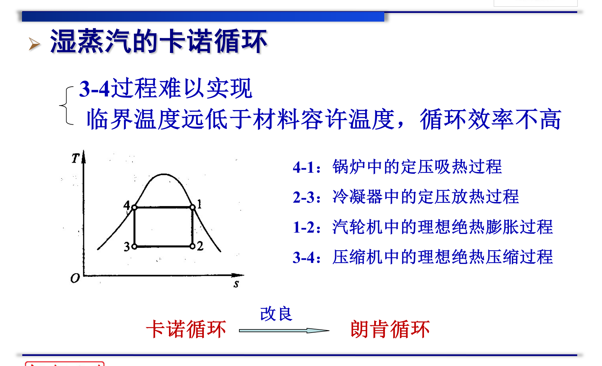
朗肯循环¶
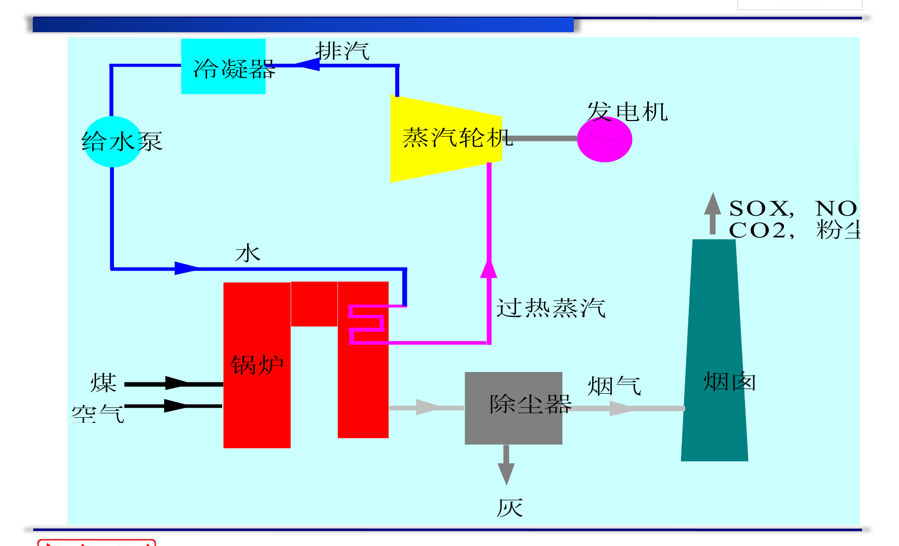
朗肯循环的四个过程
| 过程 | 设备 | 性质 |
|---|---|---|
| \(4\to1\) | 锅炉 | 定压吸热（水→过热蒸汽） |
| \(1\to2\) | 汽轮机 | 绝热膨胀做功 |
| \(2\to3\) | 冷凝器 | 定压放热（乏汽→凝结水） |
| \(3\to4\) | 水泵 | 绝热加压 |
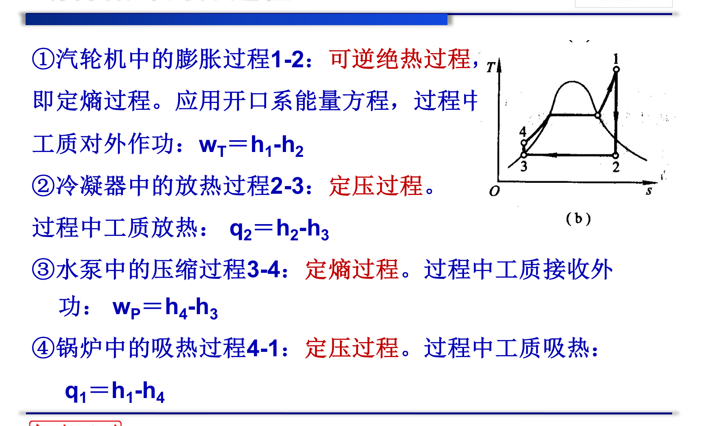
热效率：
其中汽轮机做功 \(w_T = h_1 - h_2\)，水泵耗功 \(w_p = h_4 - h_3 \approx v'(p_1 - p_2)\)。
水泵功通常可忽略
液态水比体积很小，水泵功 \(w_p\) 远小于汽轮机功，工程估算常忽略： $\(\eta_t \approx \frac{h_1 - h_2}{h_1 - h_3}\)$
提高朗肯循环效率的途径¶
三条途径
本质都是提高平均吸热温度或降低平均放热温度：
- 提高初压 \(p_1\)（初温不变）：效率上升，但乏汽湿度增大，危及汽轮机末级叶片
- 提高初温 \(t_1\)：效率上升，且改善乏汽干度——最受欢迎，受材料耐温限制
- 降低背压 \(p_2\)（冷凝压力）：效率上升最显著，受环境冷源温度限制
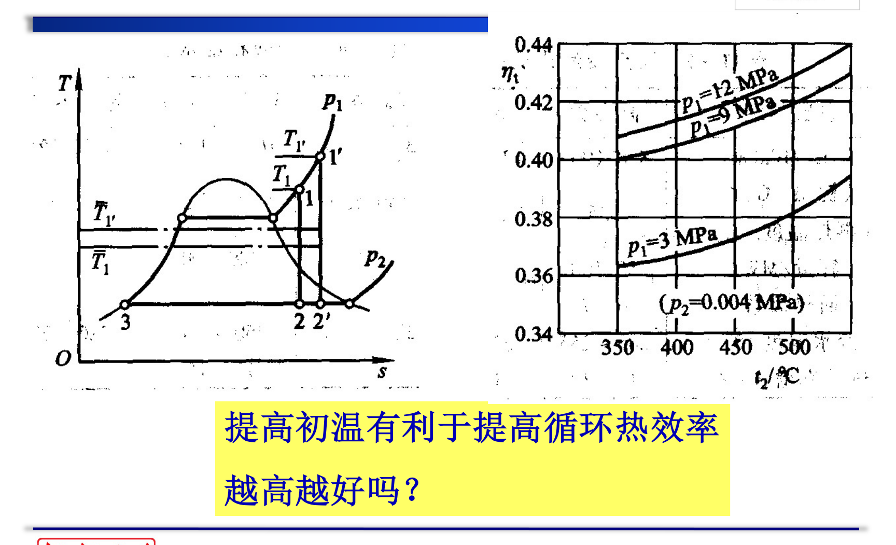
再热循环与回热循环¶
- 再热循环：蒸汽在汽轮机高压缸膨胀后抽回锅炉再热，再进入低压缸继续膨胀。既提高了平均吸热温度、又改善了乏汽干度。
- 回热循环：从汽轮机中间级抽汽去加热锅炉给水，减少了锅炉中低温段的吸热，提高了平均吸热温度，是现代电厂提效的核心手段。抽汽量 \(\alpha\) 由给水加热器的能量平衡确定。
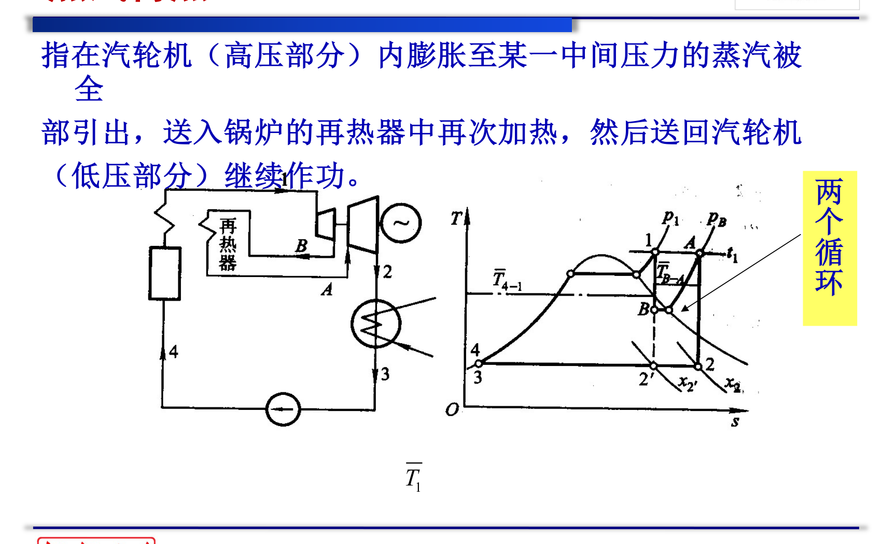
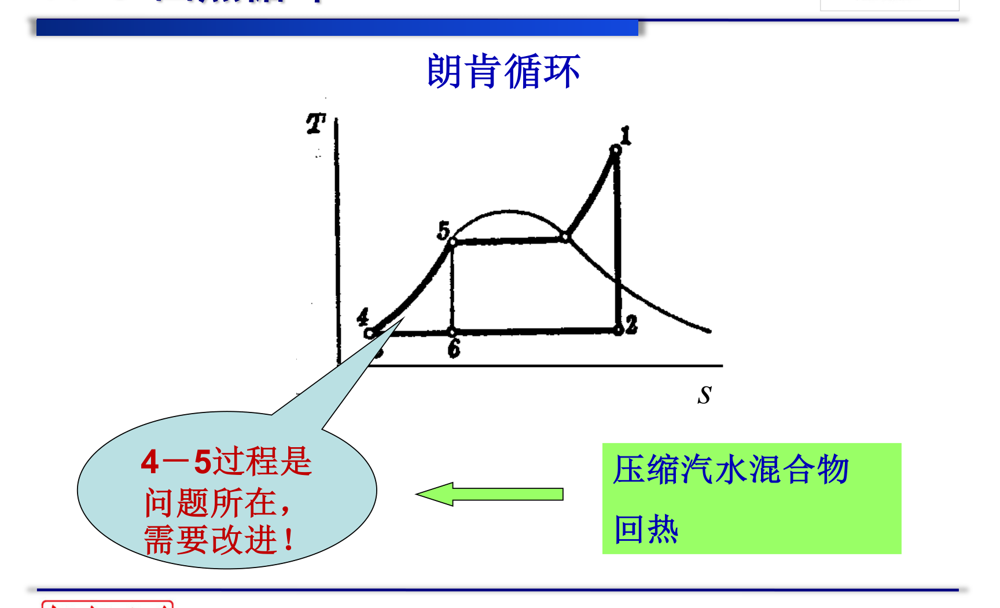
循环的其他评价指标¶
汽耗率、循环功比与相对内效率
- 汽耗率 \(d\)：每产生 \(1\,\text{kW·h}\) 功所耗蒸汽量，\(d = \dfrac{3600}{w_{\text{net}}}\ \text{kg/(kW·h)}\)，反映设备尺寸
- 循环功比：净功与汽轮机做功之比 \(w_{\text{net}}/w_T\)。蒸汽动力循环泵功很小，功比接近 1（这正是它优于燃气轮机之处——燃气轮机压气机耗功大，功比低）
- 汽轮机相对内效率 \(\eta_{ri}\)：实际膨胀与理想等熵膨胀的焓降之比 \(\eta_{ri} = \dfrac{h_1 - h_{2'}}{h_1 - h_2}\)，计入了汽轮机内部不可逆损失
提高效率的发展方向
除提高参数（初温、初压、降背压）和再热、回热外，工程上还采用热电联产（cogeneration，乏汽余热供暖）、燃气-蒸汽联合循环、IGCC（整体煤气化联合循环）等形式，进一步逼近卡诺极限。
例题 11-1：朗肯循环热效率
题目：新蒸汽 \(p_1 = 10\,\text{MPa}\)、\(t_1 = 500\,^\circ\text{C}\)，冷凝压力 \(p_2 = 5\,\text{kPa}\)。求循环热效率。
查表（代表性值，\(h\) 单位 kJ/kg，\(s\) 单位 kJ/(kg·K)）：
- 新蒸汽 \(h_1 = 3373\)，\(s_1 = 6.597\)
- \(5\,\text{kPa}\) 饱和：\(h' = 137.8\)，\(h'' = 2561\)，\(s' = 0.476\)，\(s'' = 8.394\)，\(v' = 0.001005\)
求解：
汽轮机绝热膨胀 \(s_2 = s_1 = 6.597\)，求乏汽干度：
水泵功与给水焓：
热效率：
要点：膨胀终点落在湿蒸汽区，须先由等熵求干度再求 \(h_2\)；忽略水泵功时 \(\eta_t \approx 42.1\%\)，差别很小。
真题精选¶
24-25春夏 · 朗肯循环综合：效率、回热、再热、T-s 图（计算）
题 普通的朗肯循环，汽轮机入口 \(26\ \text{MPa}\)、\(600^\circ\text{C}\)，冷凝压力 \(0.004\ \text{MPa}\)。(1) 求热效率；(2) 加一个回热，给水温度变为 \(280^\circ\text{C}\)，求回热时的压力及此时的平均吸热温度；(3) 加一个再热，再热压力 \(5.6\ \text{MPa}\)，再热后温度 \(600^\circ\text{C}\)，求温升、汽轮机增加的功率；(4) 同时加一个回热和一个再热，画出 \(T\)-\(s\) 图。
解 普通朗肯循环：查表得 \(h_1, s_1\)（汽轮机入口）；由 \(p_2 = 0.004\ \text{MPa}\) 和 \(s_2 = s_1\) 得 \(h_2, x_2\)，泵功 \(w_p \approx v_f(p_1 - p_2)\)，于是
回热给水温度 \(280^\circ\text{C}\) 时，回热压力近似取该温度对应饱和压力；平均吸热温度 \(T_m = q_\text{in}/\Delta s_\text{heat}\)。再热循环中先膨胀至 \(5.6\ \text{MPa}\)，再热至 \(600^\circ\text{C}\)，温升为 \(600^\circ\text{C} - t_\text{再热前}\)，增加功为低压缸焓降增量。联合回热再热的 \(T\)-\(s\) 图按“泵升压 → 回热升温 → 锅炉加热 → 一级膨胀 → 再热 → 二级膨胀 → 冷凝”顺序连接。
23-24春夏 · 抽气回热朗肯循环，求抽气系数/吸热/放热/功/效率
题 抽气回热朗肯循环，求抽气系数、吸热量、放热量、作功量和热效率。
答 抽气回热循环用加热器能量平衡求抽气系数。混合式一级回热常用
得 \(\alpha\)。再按各质量份额求
19春夏 · 乏汽能否直接送回锅炉加热
题 蒸汽动力循环中把乏汽直接送回锅炉加热是否可行？
答 不可行。冷凝器出口是低压饱和水，若直接送回锅炉，与高压锅炉压力不匹配，且会造成巨大不可逆混合和泵送问题；必须先经给水泵升压，再进入锅炉。
19春夏 · 一次再热（不计泵功），求循环功/吸热/效率/汽耗率/乏汽干度
题 蒸汽动力循环一次再热，不计泵功，题干和表中给出了各点 \(p\)、\(T\)、\(h\)、\(s\)。求循环功量、吸热量、循环效率、汽耗率、乏汽干度。
解 一次再热且不计泵功时，
乏汽干度由末态 \(h\) 或 \(s\) 与冷凝压力下饱和值求得。
模拟题 · 影响蒸汽动力循环热效率的主要因素
题 简述蒸汽动力循环中影响热效率的主要因素。
答 提高朗肯循环热效率的主要方法：提高主蒸汽温度和压力、降低冷凝压力、采用再热提高平均放热温度并改善干度、采用回热提高平均吸热温度、减少泵和汽轮机不可逆损失。
回热器两种形式与乏汽干度
历年回热题分两种加热器，抽气系数 \(\alpha\) 的求法不同：
- 混合式：抽汽与给水直接混合，\(\alpha h_b + (1-\alpha)h_2 = h_f(p_b)\)；
- 表面式：抽汽与给水不混合，\(\alpha(h_b - h_d) = (h_\text{fw,out} - h_\text{fw,in})\)，疏水焓 \(h_d\) 按回热器疏水状态取值。
乏汽（排汽）落在湿区时，干度 \(x = (s - s_f)/s_{fg} = (h - h_f)/h_{fg}\)；汽耗率 \(b = 3600/w_\text{net}\)。
第十二章 · 气体动力循环¶
章节概览
以气体为工质的动力循环，包括活塞式内燃机（定容、定压、混合加热）与燃气轮机（布雷顿循环）。分析前先用空气标准假设把复杂的实际循环抽象为可计算的理想循环。
空气标准假设¶
空气标准假设（五条）
- 工质简化为定比热理想空气，数量不变
- 压缩、膨胀过程忽略换热与摩擦，简化为可逆绝热过程
- 燃烧加热简化为工质从高温热源可逆定容/定压吸热
- 排气简化为向低温热源可逆定压（或定容）放热
- 进、排气过程相互重合抵消，开式循环变为闭式循环
经此简化，实际不可逆开式循环就成了可在 \(p\)-\(v\)、\(T\)-\(s\) 图上分析的理想闭式循环。
活塞式内燃机理想循环¶
三种加热方式
| 循环 | 加热方式 | 对应机型 |
|---|---|---|
| 奥托（Otto） | 定容加热 | 汽油机 |
| 狄塞尔（Diesel） | 定压加热 | 低速柴油机 |
| 萨巴德（Sabathe） | 混合加热 | 高速柴油机 |
三者均由两个绝热过程（压缩、膨胀）加放热过程组成，区别仅在加热段。
定容加热循环（奥托）热效率：
定压加热循环（狄塞尔）热效率：
混合加热循环（萨巴德）热效率：
压缩比是关键
奥托循环效率只取决于压缩比 \(\varepsilon\) 与 \(\gamma\)：\(\varepsilon\) 越大效率越高。但汽油机受爆震限制，\(\varepsilon\) 不能太高（约 8–11）；柴油机压燃，\(\varepsilon\) 可达 16–22，故效率更高。
三种循环的效率比较（常考）
用 \(T\)-\(s\) 图上的平均吸热/放热温度比较：
- 压缩比相同、吸热量相同时：\(\eta_{\text{奥托}} > \eta_{\text{萨巴德}} > \eta_{\text{狄塞尔}}\)
- 最高压力 \(p_{\max}\)、最高温度 \(T_{\max}\) 相同时：\(\eta_{\text{狄塞尔}} > \eta_{\text{萨巴德}} > \eta_{\text{奥托}}\)
后一种比较更贴近实际（受材料耐压耐温限制），这也是高增压比柴油机经济性好的原因。
燃气轮机循环（布雷顿循环）¶
由压气机、燃烧室、燃气透平组成，理想化为：绝热压缩 → 定压加热 → 绝热膨胀 → 定压放热。
布雷顿循环热效率
$\(\eta_t = 1 - \frac{1}{\pi^{\frac{\gamma-1}{\gamma}}}, \qquad \pi = \frac{p_2}{p_1}\ (\text{增压比})\)$ 效率随增压比 \(\pi\) 增大而提高。燃气轮机连续运转、功率密度大，是航空发动机与联合循环电站的核心。
除增压比外，再引入增温比 \(\tau = T_3/T_1\)（循环最高温与最低温之比）。
增压比、净功与提高 T₃
热效率只随 \(\pi\) 升高；但净功 \(w_{\text{net}}\) 随 \(\pi\) 先增后减，给定 \(\tau\) 时存在使净功最大的最佳增压比。提高 \(\tau\)（即提高燃气初温 \(T_3\)）既能抬高 \(w_{\text{net,max}}\)、又能抬高取得它的 \(\pi\)，从而同时提升比功率与效率——所以在材料耐温允许下应尽量提高 \(T_3\)。增压比则受设备耐压耐温限制。
实际循环计入压气机与透平的不可逆损失：
内部热效率 \(\eta_i = w_{\text{net}}/q_1\) 由二者共同决定。
提高燃气轮机热效率的措施
- 回热：用排气预热压缩后的空气，提高平均吸热温度、降低平均放热温度
- 在回热基础上分级压缩 + 级间冷却（使压缩近似定温）
- 在回热基础上多级膨胀 + 中间再热（使膨胀近似定温）
注意：脱离回热单纯分级压缩或中间再热并不能提高热效率。
例题 12-1：奥托循环热效率
题目：某汽油机按奥托循环工作，压缩比 \(\varepsilon = 8\)，工质取空气 \(\gamma = 1.4\)。求理想热效率。
求解：
要点：理想热效率仅由压缩比决定。实际汽油机受爆震限制压缩比、并存在各种损失，实际效率远低于此（约 25–30%）。提高 \(\varepsilon\) 是提升内燃机效率的根本方向。
真题精选¶
23-24春夏 · 定压加热与定容加热循环效率，如何提高
题 定压加热和定容加热循环，画出 \(p\)-\(v\) 图并计算热效率。分析该怎么提高热效率。
答 定容加热奥托循环效率 \(\eta_v = 1 - \dfrac{1}{\varepsilon^{k-1}}\)；定压加热狄塞尔循环效率 \(\eta_p = 1 - \dfrac{1}{\varepsilon^{k-1}}\dfrac{\rho^k - 1}{k(\rho - 1)}\)。提高压缩比、提高最高温度、减少不可逆损失可提高效率。在 \(p\)-\(v\) 图上定容加热为竖直升压段，定压加热为水平加热段。
22-23春夏 · 燃气轮机功率200MW，求压气机功率/空气流量/做功功率（计算）
题 燃气轮机功率是 \(200\ \text{MW}\)，燃气轮机循环最高温度 \(1600\ \text{K}\)、最低温度 \(300\ \text{K}\)，燃气轮机增压比 \(14\)，压气机进气压强 \(100\ \text{kPa}\)。(1) 求压气机功率；(2) 求空气流量；(3) 若燃气轮机内效率 \(88\%\)，求燃气轮机做功功率。
解 取空气 \(k = 1.4\)，\(c_p = 1.005\ \text{kJ/(kg·K)}\)，压比 \(\pi = 14\)。理想布雷顿循环 \(T_2 = T_1\pi^{(k-1)/k} = 300\times 14^{0.2857} = 637\ \text{K}\)。压气机比功 \(w_c = c_p(T_2 - T_1) = 339\ \text{kJ/kg}\)。涡轮出口 \(T_4 = T_3/\pi^{(k-1)/k} = 753\ \text{K}\)，\(w_t = c_p(T_3 - T_4) = 851\ \text{kJ/kg}\)。净比功 \(w_\text{net} = 512\ \text{kJ/kg}\)，若输出 \(200\ \text{MW}\)，\(\dot m = 200000/512 = 391\ \text{kg/s}\)，压气机功率约 \(133\ \text{MW}\)。若涡轮内效率 \(0.88\)，涡轮比功 \(0.88w_t = 749\ \text{kJ/kg}\)，按同一流量涡轮功率约 \(293\ \text{MW}\)。
19-20春夏 · 燃气轮机定压加热循环，用增压比表示热效率
题 燃气轮机定压加热循环 \(T\)-\(s\) 图，用循环增压比表示的热效率公式。（假设工质为理想气体，比热取定值）
答 燃气轮机定压加热理想循环热效率
19春夏 · 燃气轮机装置（含部件效率）求净功效率与循环热效率（计算）
题 燃气轮机循环装置，压缩机进口压力 \(100\ \text{kPa}\)、进口温度 \(20^\circ\text{C}\)，压缩比 \(6\)，绝热效率 \(0.82\)；燃气轮机进口温度 \(800^\circ\text{C}\)，相对内效率 \(0.85\)。(1) 定性画出 \(T\)-\(s\) 图；(2) 计算净功效率（净功/技术功）；(3) 计算循环热效率。
解 给定压气机效率 \(\eta_c\) 和涡轮相对内效率 \(\eta_t\)：
\(w_c = c_p(T_2 - T_1)\)，\(w_t = c_p(T_3 - T_4)\)，净功效率 \(= (w_t - w_c)/w_t\)，热效率 \(= (w_t - w_c)/[c_p(T_3 - T_2)]\)。代入 \(T_1 = 293\ \text{K}\)，\(\pi = 6\)，\(\eta_c = 0.82\)，\(T_3 = 1073\ \text{K}\)，\(\eta_t = 0.85\) 得 \(T_2 \approx 532\ \text{K}\)，\(T_4 \approx 708\ \text{K}\)，净功效率约 \(34.6\%\)，循环热效率约 \(23.4\%\)。
17春夏 · 进口温度、压缩比、吸热量相同时三种加热循环效率高低
题 进口温度、压缩比和吸热量均相同的情况下，试比较定容加热循环、定压加热循环、混合加热循环的热效率高低。
答 进口温度、压缩比和吸热量相同时，效率通常
原因是定容加热的平均吸热温度较高，定压加热较低。混合加热循环（定容升压比 \(\lambda = p_3/p_2\)，定压预胀比 \(\rho = v_4/v_3\)）效率
在 \(T\)-\(s\) 图上定容加热温升更陡，平均吸热温度更高。
第十三章 · 制冷循环¶
章节概览
制冷循环是逆循环：消耗外功把热量从低温热源（冷库）抽向高温热源（环境）。本章给出制冷系数定义、逆卡诺上限，并重点分析工程主流的蒸汽压缩制冷循环。
制冷系数与供热系数¶
制冷系数 \(\varepsilon\) 与供热系数 \(\varepsilon'\)
制冷机以"从冷源取热 \(q_2\)"为目的： $\(\varepsilon = \frac{q_2}{w_{\text{net}}}\)$ 热泵以"向热源供热 \(q_1\)"为目的： $\(\varepsilon' = \frac{q_1}{w_{\text{net}}} = \varepsilon + 1\)$ 二者均可大于 1，这正是制冷/热泵节能的根源——搬运的热量远多于消耗的功。
逆卡诺循环给出理论上限：
温差 \(T_1 - T_2\) 越小，制冷系数越高。
空气压缩制冷循环¶
以空气为工质的逆布雷顿循环：绝热压缩 → 定压放热 → 绝热膨胀 → 定压吸热。
因空气定压吸热温度变化大、制冷系数低，主要用于早期及航空空调等特殊场合。
例题 13-2：空气压缩制冷循环（增压比的影响）
题目：空气压缩制冷循环，压缩机进口（冷库）温度 \(T_1 = 290\,\text{K}\)、冷却器出口（环境）温度 \(T_3 = 300\,\text{K}\)。增压比分别为 \(\pi = 3\) 和 \(6\)，求制冷系数与每千克工质制冷量。取 \(c_p = 1.005\,\text{kJ/(kg·K)}\)、\(\gamma = 1.4\)。
求解——记 \(\pi^{(\gamma-1)/\gamma}\)，则 \(T_4 = T_3/\pi^{(\gamma-1)/\gamma}\)，制冷量 \(q_2 = c_p(T_1 - T_4)\)。
| \(\pi\) | \(\pi^{(\gamma-1)/\gamma}\) | \(T_4\) (K) | \(\varepsilon = \dfrac{1}{\pi^{(\gamma-1)/\gamma}-1}\) | \(q_2 = c_p(T_1-T_4)\) |
|---|---|---|---|---|
| 3 | 1.369 | 219.2 | 2.71 | 71.2 kJ/kg |
| 6 | 1.669 | 179.8 | 1.50 | 110.7 kJ/kg |
要点：增压比增大，制冷系数下降（耗功增加更快），但单位质量制冷量增大。实际设计需在效率与制冷量、设备尺寸之间权衡。
蒸汽压缩制冷循环¶
利用制冷剂相变吸放热，是冰箱、空调的主流方案，又称帕金斯（Perkins）循环：
四个过程
| 过程 | 设备 | 性质 |
|---|---|---|
| \(1\to2\) | 压缩机 | 绝热压缩（干压缩，进口为干饱和蒸汽） |
| \(2\to3\) | 冷凝器 | 定压放热（过热蒸汽→饱和液） |
| \(3\to4\) | 节流阀 | 绝热节流（\(h_3 = h_4\)） |
| \(4\to1\) | 蒸发器 | 定压吸热制冷（湿蒸汽→干饱和蒸汽） |
制冷系数：
压焓图（lnp-h 图）
蒸汽压缩制冷循环分析常用 \(\ln p\)-\(h\) 图（压焓图）：纵轴为 \(\ln p\)、横轴为 \(h\)。由于蒸发器与冷凝器都是定压过程（图上为水平线），吸热量、放热量、压缩功都直接表现为焓差（水平线段长度），读图即得，比 \(T\)-\(s\) 图更便于制冷计算。
为何用节流阀而非膨胀机
液态制冷剂经膨胀机可回收的功极小，而膨胀机处理汽液两相既昂贵又易损。改用节流阀虽是不可逆过程（产生熵），但结构简单可靠、损失有限，是工程上的最优折中。
例题 13-1：蒸汽压缩制冷循环的制冷系数
题目：某制冷装置以 R134a 为工质，蒸发温度 \(-10\,^\circ\text{C}\)、冷凝温度 \(40\,^\circ\text{C}\)。求制冷系数。
查表 / 读图（代表性值，\(h\) 单位 kJ/kg）：
- 蒸发器出口干饱和蒸汽 \(h_1 = 392.4\)
- 等熵压缩到冷凝压力 \(h_2 = 425.0\)
- 冷凝器出口饱和液 \(h_3 = 256.4\)，节流后 \(h_4 = h_3 = 256.4\)
求解：
要点：制冷量 \(q_2 = h_1 - h_4\) 取自节流后焓（节流使 \(h\) 不变但压力温度骤降）；若作热泵用，供热系数 \(\varepsilon' = \varepsilon + 1 \approx 5.17\)。
真题精选¶
23-24/20-21春夏 · 蒸汽压缩制冷相比空气制冷的优点及原因
题 蒸汽制冷比空气制冷的优点及原因（蒸汽制冷循环与空气制冷循环相比，优点是什么，为什么）。
答 蒸汽压缩制冷优于空气制冷：制冷剂在蒸发器和冷凝器中近似等温相变换热，利用潜热吸放热，单位质量制冷量大、换热温差小、制冷系数较高、所需质量流量小、设备紧凑，循环更接近逆卡诺循环，因此工程上更常用。
24-25春夏 · 氨蒸汽压缩制冷循环，求流量/耗功/COP/逆卡诺COP（计算）
题 氨蒸汽制冷循环，冷凝温度 \(20^\circ\text{C}\)，蒸发温度 \(-20^\circ\text{C}\)。已知 \(h_1\)、\(h_3\)、\(h_4\)，且压气机入口处为饱和干蒸汽，已知总制冷量。(1) 求质量流量；(2) 求压气机的耗功量；(3) 求 COP；(4) 求相同状态的逆卡诺循环的 COP；(5) 为什么这个制冷循环的 COP 没有逆卡诺循环高。
解 氨循环中 1 为压缩机入口饱和干蒸汽，节流阀 \(h_4 = h_3\)。单位制冷量 \(q_L = h_1 - h_4\)。总制冷量 \(\dot Q_L\) 给定时
逆卡诺制冷系数
实际循环低于逆卡诺，因为压缩、节流和有限温差换热均不可逆。
19-20春夏 · 什么是回热循环，提高空气压缩制冷效率的方法
题 什么是回热循环？提高空气压缩制冷效率的方法有哪些？
答 回热循环是用循环内部高温流体预热低温流体，回收本会损失的热量。提高空气压缩制冷效率的方法包括多级压缩中间冷却、膨胀机代替节流、回热、减小换热温差、提高压缩机和膨胀机效率。
19春夏 · 氨热泵循环，求COP与运行费用（计算）
题 氨气作制冷剂的热泵循环，最大热负载为 \(20\ \text{kW}\)，给出循环 \(T\)-\(s\) 图各点氨蒸气焓值。(1) 计算 COP；(2) 电费为 \(0.58\) 元/千瓦时，最大热负载下一小时用电花费多少钱；(3) 与天然气供热 \(0.9\) 元/\(10000\ \text{kJ}\) 相比，一年（\(2000\) 小时计）可省多少钱。
解 热泵循环供热量 \(\dot Q_H\)，压缩机功 \(\dot W\)，则
最大热负载 \(20\ \text{kW}\) 时每小时耗电 \(E = \dfrac{20}{\text{COP}_{HP}}\ \text{kWh}\)，电费 \(C_e = 0.58E\)。年供热量 \(20\times 2000\times 3600\ \text{kJ}\)；天然气费用为该热量除以 \(10000\ \text{kJ}\) 再乘 \(0.9\) 元；节省费用为天然气费用减热泵电费。
17春夏 · 空气制冷COP是否等于 T2/(T2−T1)
题 空气制冷循环中环境温度为 \(T_1\)，冷藏室温度为 \(T_2\)，制冷系数是否等于 \(T_2/(T_2 - T_1)\)，并解释原因。
答 不等于。\(T_2/(T_1 - T_2)\) 是在高温环境 \(T_1\) 与低温冷藏室 \(T_2\) 间运行的逆卡诺制冷系数。空气制冷循环含非等温换热、压缩和膨胀不可逆，实际 COP 小于该值。题中写成 \(T_2/(T_2 - T_1)\) 分母为负，也不符合制冷系数定义。
第十四章 · 化学反应系统的热力学原理¶
章节概览
燃烧是热能的主要来源，涉及化学反应中的能量转换。本章把热力学第一、第二、第三定律推广到化学反应系统：反应热的计算、热化学定律、化学平衡判据，以及绝对熵。
反应热与热效应¶
化学反应在定温下放出或吸收的热量称为反应热（热效应）。按反应条件分两种：
定容热效应与定压热效应
- 定容热效应（恒容、无其他功）：\(Q_V = \Delta U\)
- 定压热效应（恒压）：\(Q_p = \Delta H\)
两者关系（理想气体，\(\Delta n\) 为反应前后气体摩尔数之差）： $\(Q_p = Q_V + \Delta n\, RT\)$
规定放热反应 \(\Delta H < 0\)，吸热反应 \(\Delta H > 0\)。
有用功与热效应的定义前提
与简单可压缩系统不同，化学反应系统除体积功外还能输出非体积功（有用功 \(W_u\)，如燃料电池的电功）。第一定律一般式为 \(\delta Q = \mathrm{d}U + \delta W + \delta W_u\)。热效应特指不做有用功（\(W_u = 0\)）、在定容或定压下反应所放出/吸收的热——这正是 \(Q_V=\Delta U\)、\(Q_p=\Delta H\) 成立的前提。对燃料燃烧，热效应即热值（发热量）。稳定单质的生成焓规定为零。
热化学定律¶
盖斯定律（Hess）
反应热只取决于反应的始态与终态，与中间途径无关。因此热化学方程可像代数式一样叠加，由已知反应的反应热推算未知反应的反应热。
借助标准生成焓 \(\Delta H_f^\circ\)（由稳定单质生成 1 mol 化合物的焓变），任意反应的标准反应焓：
基尔霍夫定律（Kirchhoff）
反应热随温度变化： $\(\frac{\mathrm{d}(\Delta H_r)}{\mathrm{d}T} = \Delta C_p = \sum_{\text{产物}}\nu_i C_{p,i} - \sum_{\text{反应物}}\nu_j C_{p,j}\)$ 用于把某温度下的反应热换算到另一温度。
理论燃烧温度（绝热燃烧温度）¶
绝热燃烧温度
燃料在定压（或定容）下绝热完全燃烧（与外界换热为零、不做有用功）时，燃烧产物所能达到的最高温度，称为绝热燃烧温度（理论燃烧温度）\(T_{ad}\)。
由能量守恒，绝热定压燃烧时反应物在初态的总焓等于产物在终态的总焓：
它是燃烧设备的温度上限。实际因散热、不完全燃烧、高温离解等，真实火焰温度低于 \(T_{ad}\)。
反应方向与最大功¶
第二定律不仅给出反应热，还判定反应能否自发进行及可获得的最大功。孤立系仍以熵增为准则，对常用约束则用相应的功势函数：
化学反应方向判据
| 约束 | 判据 | 自发方向 / 平衡 |
|---|---|---|
| 定温-定容 | \(\mathrm{d}F_{T,V} \leq 0\) | 沿自由能 \(F\)（亥姆霍兹函数）减小方向，平衡时 \(F\) 最小 |
| 定温-定压 | \(\mathrm{d}G_{T,p} \leq 0\) | 沿自由焓 \(G\)（吉布斯函数）减小方向，平衡时 \(G\) 最小 |
反应最大功：从给定初态到终态，按可逆方式进行获得最大有用功，其值等于功势函数的减少量：
与㶲一脉相承
这正是第三章㶲（做功能力）概念在化学反应系统中的体现——最大有用功就是反应物相对产物的做功能力。燃料电池追求接近 \(W_{u,\max}\)，而普通燃烧把这部分做功能力几乎全部耗散为热。
化学平衡¶
可逆反应正逆同时进行，达到化学平衡时正逆速率相等。平衡程度由平衡常数 \(K_p\) 描述：
平衡常数随温度的变化由范特霍夫方程给出：
平衡移动方向
放热反应（\(\Delta H_r<0\)）升温使 \(K_p\) 减小（平衡左移）；吸热反应升温使 \(K_p\) 增大（平衡右移）——与勒夏特列原理一致。
热力学第三定律与绝对熵¶
热力学第三定律（奈斯特定理）
奈斯特（Nernst）热定理：凝聚系在可逆定温过程中的熵变，随热力学温度趋于零而趋于零（\(\lim_{T\to 0}\Delta S = 0\)）。普朗克进一步规定绝对零度下完整晶体的熵为零： $\(\lim_{T\to 0} S = 0\)$ 据此可确定物质的绝对熵 \(S^\circ\)，从而计算化学反应熵变 \(\Delta S_r^\circ = \sum\nu_i S_i^\circ\)，进而由 \(\Delta G = \Delta H - T\Delta S\) 判断反应方向。
绝对零度不可达
由第三定律可推出：不可能用有限的步骤使物体冷却到绝对零度。因为在 \(T\to 0\) 附近定温线与定熵线趋于重合，绝热过程即定温过程，无法再靠绝热（或放热）使温度进一步下降。
例题 14-1：用盖斯定律求燃烧反应焓
题目：求甲烷完全燃烧反应 \(\text{CH}_4 + 2\text{O}_2 \to \text{CO}_2 + 2\text{H}_2\text{O(g)}\) 的标准反应焓。
已知标准生成焓（kJ/mol）：\(\Delta H_f^\circ(\text{CH}_4) = -74.8\)，\(\Delta H_f^\circ(\text{CO}_2) = -393.5\)，\(\Delta H_f^\circ(\text{H}_2\text{O,g}) = -241.8\)，单质 \(\text{O}_2 = 0\)。
求解：
要点：\(\Delta H_r^\circ < 0\)，反应放热 \(802.3\,\text{kJ/mol}\)（这是甲烷的低位发热量，水以气态计）。生成焓法本质就是盖斯定律的应用。
真题精选¶
24-25春夏 · 盖斯定律，设计实验测 C+½O₂→CO 的热效应
题 赫斯（盖斯）定律，设计一个实验方法测定 \(\text{C} + \tfrac{1}{2}\text{O}_2 \to \text{CO}\) 的热效应。
答 盖斯定律：在给定初、终态下，反应热只与初终态有关，与反应途径无关。\(\text{C} + \tfrac{1}{2}\text{O}_2 \to \text{CO}\) 难以直接测量，可设计量热实验分别测
二者反应热相减得目标反应热。
23-24春夏 · 基尔霍夫定律，工质完全燃烧
题 基尔霍夫定律，工质完全燃烧。
答 基尔霍夫定律给出反应热随温度变化：
其中 \(\Delta C_p = \sum\nu_i C_{p,i}^\text{products} - \sum\nu_i C_{p,i}^\text{reactants}\)。完全燃烧时先配平反应式，再用标准生成焓或燃烧焓求 \(\Delta H\)。
19-20春夏 · 什么是反应热，化学反应计算主要遵循哪两个定律
题 什么是反应热？化学反应计算主要遵循哪两个定律？
答 反应热是在规定温度、压力、组成和反应进度下化学反应吸放的热效应。化学反应热计算主要遵循盖斯定律和基尔霍夫定律。
19春夏 · “化学反应过程中热效应是过程量”是否正确
题 “化学反应过程中热效应是过程量”是否正确？
答 不严谨。一般热量是过程量；但定压反应热等于焓变、定容反应热等于内能变，在给定初终态和反应式时是状态函数差，具有确定值。
17春夏 · 反应焓的计算与绝热最高温度（计算）
题 反应焓的计算（应用盖斯定律，将几个生成焓、燃烧焓方程式相叠加），并计算绝热最高温度。
解 反应焓按
或用燃烧焓代数相加。绝热最高温度由能量平衡求：
若 \(C_p\) 取常数，则 \(T_\text{ad} = T_0 + \dfrac{-\Delta H_r(T_0)}{\sum n_i C_{p,i}}\)。